White_dune ist ein graphischer VRML97/X3DV Editor, ein simpler
(NURBS) 3D Modeller und ein Animationwerkzeug in Entwicklung.
Es kann ein VRML97/X3DV file lesen, stellt dessen Szenengraph dar und
erlaubt es dem Benutzer, den Szenengraph, die Fieldwerte und Routes zu
verändern.
White_dune kann benutzt werden, um 3D-Modelle,
Animationen und Interaktionen in VRML97/X3DV zu verbessern oder zu
erstellen.
Als einziges 3D Modelling Werkzeug ist es verglichen mit der Konkurrenz noch
etwas schwach.
Es ist sinnvoll, noch zusätzlich einen statischen 3D Modeller mit
VRML97/X3D Export
(wie z.B. wings3D oder Art Of Illusion) einzusetzen.
Der Vorteil von white_dune gegenüber den meisten anderen 3D Modellern
ist, dass das Beleuchtungsmodell und der innere Aufbau von white_dune auf den
VRML97/X3DV Standards basiert. Dadurch lassen sich die Möglichkeiten von
VRML97/X3DV bei einer Nachbearbeitung oder Erstellung mit white_dune besser
nutzen.
Verglichen mit den allgemein einsetzbaren 3D Modellern (die meinstens
nur Mesh (IndexedFaceSet) und Interpolatorknoten exportieren können)
unterstützt white_dune alle VRML97 Knoten und alle
Knoten des X3D Standards "X3D 3.3" (ISO/IEC 19775-1:2013), auch wenn nicht
alle Knoten dargestellt werden.
white_dune ist ein open source Programm, das bedeutet dass jeder das Programm
kopieren und verändern darf. Die offizielle Version ist unter
https://wdune.ourproject.org
verfügbar.
White_dune wird dauernd weiterentwickelt und läuft daher nicht immer so
stabil, wie es sollte.
Wenn white_dune abgestürzt ist, ist die bisherige Arbeit verloren ?
Nein, nicht zwingend.
"white_dune" versucht noch, die
VRML97/X3D Datei kurz vor dem Absturz zu speichern. Das funktioniert nicht
immer, vor allem wenn der Fehler, der den Absturz verursacht hat, die
interne Datenstruktur zerstört hat (das passiert allerdings eher selten).
Wenn die Datei erfolgreich geschrieben worden ist, schreibt white_dune
unter Unix/Linux
Wenn der Fehler, der zum Absturz geführt hat, die interne Datenstruktur
im Programm beschädigt hat, kann diese Methode versagen.
In diesem Fall lohnt es sich nach temporären Daten (".dune_*") im
Verzeichnis der VRML-Datei zu suchen, die bei der Ausführung von
Datei->Vorschau oder Datei->Textedit entstanden sind.
Diese Dateien werden bei einem normalen Programmende gelöscht, nicht
aber bei einem Programmabsturz.
Wenn white_dune sehr oft abstürtzt, aber alle Daten erfolgreich
gerettet werden konnten, kann es Sinn machen, diese überflüssigen
Datein zu suchen und löschen, um verschwendeten Plattenplatz
zurückzugewinnen.
Neben Dateien zur Vorschau und zum Editieren mit einem Texteditor
speichert white_dune auch den Inhalt eines editierten Script-Knotens
zur Verwendung in einem Texteditor in temporären Dateien.
Um white_dune mit deutschen Menüs zu starten, muss die Kommandozeilenoption
"-german" benutzt werden.
Zur Zeit sind 4 Kommandozeilen-Optionen für Sprachen verfügbar:
White_dune (ohne -4kids oder -4catt option) ist ein Lowlevel Werkzeug zum
Bearbeiten von VRML97 und X3DV
Files. Dabei wird vorausgesetzt, dass dem Benutzer die grundlegende
Struktur von VRML/X3D bekannt ist.
Natürlich kann white_dune dazu benutzt werden, um sich in VRML/X3D
einzuarbeiten. Ein guter Startpunkt ist natürlich das
"-4kids" Kommandozeilenargument, aber damit lassen sich nur
3D-Objekte erzeugen und animieren, die interessanteren VRML/X3D Features
wie Interaktion und Scripting bleiben aussen vor.
Man findet einige typischen VRML/X3D Beispiele (die man in white_dune)
laden kann hier,
aber man muss sich darüber im Klaren sein, dass diese Beispiele
keine Modelling- oder Animations-Features zeigen, sie zeigen
hauptsächlich VRML97 Beispiele mit Interaktion und Scripting.
Das sind Features die in white_dune (noch) nicht korrekt angezeigt werden
können.
Die Beispiele dienen als Ausgangsbasis, um mit white_dune interaktive
3D-Welten zu erstellen, die dann später mit einen "richtigen"
VRML/X3D Browser angezeigt werden können.
Das "Route"-Fenster und der Script-Code sind für einen Anfäger
am interessantesten.
Ausführliche technische Informationen zu VRML97 findet
man in der
offiziellen ISO Spezifikation unter
http://www.web3d.org/x3d/specifications/vrml/ISO-IEC-14772-IS-VRML97WithAmendment1.
Für die Benutzung von White_dune ist vor allem die Node Referenz
http://www.web3d.org/x3d/specifications/vrml/ISO-IEC-14772-IS-VRML97WithAmendment1/part1/nodesRef.html
wichtig.
X3D ist der Nachfolger von VRML97. Trotz einigen minimalen technischen
Unterschieden (die von white_dune automatisch abgehandelt werden) sind
alle Befehle des VRML97 Standards von 1997 in X3D weiter vorhanden.
Für den "vergessenen" VRML97 Amendment 1 Standard von 2002 gilt dies
nicht z.B. der CoordinateDeformer Knoten existiert nicht mehr in X3D.
Die meisten weiter existierenden VRML97 Amendment 1 Befehle werden aber
automatisch von white_dune abgehandelt, wenn eine VRML97-Datei als
X3D(V)-Datei abgespeichert wird.
White_dune kann die Daten des VRML97/X3DV Szenengraphen in den
Programmiersprachen C, C++ oder java exportieren ("X3D-compiler").
Details dazu findet man in der Manpage von
white_dune.
Für die Programmiersprache C gibt es eine in der Entwicklung befindliche
Bibleothek, mit deren Hilfe man 3D-Objekte und Animationen mit Hilfe
von OpenGL rendern kann. Beispiele dazu finden sich im
Verzeichnis docs/export_example_c des
Sourcearchives. Die entsprechenden Beispiele für die Programmiersprache C++
finden sich im Verzeichnis
docs/export_example_c++.
Für die Programmiersprache java existiert eine Möglichkeit, 3D-Objekte
und Animationen mit der Java Monkey Engine (JME, Version 2) zu rendern.
Die entsprechenden Beispiele finden sich im Verzeichnis
docs/export_example_java.
Darauf basiert auch der in white_dune eingebaute Export zu Quellcode für
ein Module in Open Wonderland(einer
Internet-3D-Multiuserumgebung).
Dabei ist neben der Anzeige von 3D-Objekten und Animation auch Interaktion
(mit Hilfe der VRML97/X3D Sensorknoten) möglich. Allerdings werden
(bisher) nicht alle X3D Knoten und nicht das gesamte Laufzeitverhalten
unterstützt.
Im Gegensatz zu VRML/X3D und traditionellem OpenGL unterstützt
Open Wonderland keine graphischen 3D-Objekte, die aus Polygonen mit mehr
als 3 oder 4 Eckpunkten bestehen (obwohl Open Wonderland intern OpenGL
verwendet). Deshalb trianguliert white_dune diese Objekte beim
Wonderland-Export.
Das funktioniert aber nicht so einfach bei der Morphing-Animation von
3D-Objekte mit Polygonen mit mehr als 4 Eckpunkten, diese 3D-Objekte
unterstützen beim Open Wonderland Export keine Morphing-Animation.
Ob ein bestimmter X3D Knoten in Open Wonderland unterstützt wird, sieht man
am rechten unteren Rand seines Icons: dort befindet sich ein kleiner blauer
Punkt (wie beim Icon für Box)
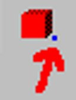
wenn der Knoten in Open Wonderland unterstützt wird.
Die Frage, welche Interaktionen möglich sind, entscheidet sich im
RouteView-Fenster. Bei SensorKnoten und Interpolatoren (nur bei diesen) sind
die unterstützten Events farbig markiert.
Eine blaue oder lila Markierung der Events eines Knotens im RouteView
bedeutet, dass der Event vom Wonderland Exporter unterstützt wird,
während eine rote oder keine Markierung bedeutet, dass der
Event vom Wonderland Exporter (noch) nicht unterstützt wird.
Eine rote Markierung bedeutet, dass es sich um einen oft benutzen Event
handelt, eine lila Markierung soll eine Mischung zwischen roter und blauer
Markierung andeuten: diese Events sind sowohl oft benutzt als auch vom
Wonderland Exporter unterstützt.
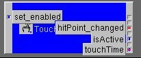
Im Beispiel wird ein TouchSensor im RouteView-Fenster gezeigt, zusammen
mit einigen seiner EventNamen.

 durch das VRML File navigiert werden.
durch das VRML File navigiert werden.
Das Scene-Icon wird ausgewählt, wenn ins Leere des 3D Preview Fensters
geklickt wird.
Zusätzlich existiert je ein Icon das Navigation mit der
Maus  oder dem Eingabegerät
oder dem Eingabegerät
 erzwingt.
erzwingt.
Einen neuen
VRML node mit eine Mausklick auf das entsprechenden Icon
hinzufügen ist der einfachste Weg, den Szenengraph zu ändern.
Um ein VRML Knoten Icon zu identifizieren, bewegen Sie den Mousezeiger
über das Icon und warten Sie kurz. Ein beschreibender Text wird auf der
Statusbar am unteren Ende des Fensters erscheinen.
White_dune versucht, entweder den neuen node am blau untermalten
Selektionspunkt des Szenengraph

oder am root node des Scenengraph ("Scene" Icon) einzufügen.
White_dune graut alle node Icons aus, die nicht eingefügt werden
können.

Die folgende Tabelle zeigt die Anforderung für die entsprechenden
Knoten im VRML97 Standard:
- Appearance braucht Shape
- Material braucht Appearance
- ImageTexture braucht Appearance
- MovieTexture braucht Appearance
- PixelTexture braucht Appearance
- TextureTransform braucht Appearance
- Coordinate braucht IndexedFaceSet oder IndexedLineSet oder PointSet
- Color braucht IndexedFaceSet oder IndexedLineSet oder PointSet oder
ElevationGrid
- Normal braucht IndexedFaceSet
- TextureCoordinate braucht IndexedFaceSet
- FontStyle braucht Text
- AudioClip braucht Sound
So muss zum Beispiel ein Appearence Knoten selektiert sein, damit ein
ImageTexture Knoten eingefügt werden kann, oder ein Shape Knoten
selektiert sein, damit ein Appearence Knoten eingefügt werden kann.
Alle die entsprechenden Felder im VRML97 Standard sind vom Datentyp
SFNode, deshalb kann nur ein Knoten eingefügt werden.
Deshalb wird ein Icon auch dann ausgegräut, wenn schon ein
entsprechender Knoten vorhanden ist.
Zum Beispiel können keine zwei ImageTexture Knoten zu einem
Appearence Knoten hinzugefüt werden.
Deswegen ist das ImageTexture Icon ebenfalls ausgegraut,
wenn ein Appearence Knote selektiert wird, aber ein ImageTexture Knoten
schon vorhanden ist.
Nach dem VRML97 Standard brauchen auch die Körper Knoten Box, Sphere,
Cone, Cylinder, IndexedFaceSet, IndexedLineSet, PointSet, ElevationGrid,
Extrusion und Text als Vorraussetzung einen Shapeknoten. Da bei der
Benutzung dieser Shape.geometry Knoten die
benötigte Struktur klar ist, wird beim Klicken auf die Icons und
bei der Benutzung der Erzeugen -> Koerper -> Menüpunkte
eine vollständige Shape-Struktur (einschliesslich default
Appearance/Material Knoten und einem umschliessenden Transform Knoten)
aufgebaut.
(Neu in Version 0.29beta) Ist bei der Erzeugung so eines Shape-Knotens
kein Knoten angewählt in den der Shape-Knoten passt, so wird der
umschliessende Transform Knoten so aufgebaut, dass der neue Knoten direkt
vor dem aktuellen Kamerapunkt erscheint).
Für die im VRML97 Amendment 1 Standard hinzugekommenen, aber inzwischen
veralteten Knoten gilt zusätzlich:
-
Coordinate braucht CoordinateDeformer
-
NurbsSurface braucht Shape oder NurbsGroup
-
Contour2D braucht TrimmedSurface
-
NurbsTexutureCoordinate braucht NurbsSurface
-
TextureCoordinate braucht entweder entsprechenden VRML97 Knoten oder
NurbsSurface
Die Erweiterungen und zusätzlichen Knoten des immersiven Cover VRML97
Browsers brauchen ebenfalls zusätzliche Regeln:
-
Wave braucht Shape
-
VirtualSoundSource braucht VirtualAcoustics
Die Erweiterungen und zusätzlichen Knoten der kambi VRML game engine
braucht auch eine zusätzliche Regel:
-
ImageTexture, PixelTexture und MovieTexture nodes brauchen entweder
die entsprechenden VRML97 Knoten oder KambiAppearance
White_dune hat selbst eine Scripted PROTO Erweiterung, die auch
eine zusätzliche Regel braucht:
-
VrmlScene braucht VrmlCut
Weil es sehr viel mehr X3D Knoten als VRML97 Knoten gibt, ist die Liste
der benötigten Knoten bei X3D sehr viel länger als bei VRML97:
-
MultiTexture braucht Appearance
-
ImageTexture braucht Appearance oder MultiTexture
-
MovieTexture braucht Appearance oder MultiTexture
-
PixelTexture braucht Appearance oder MultiTexture
-
MultiTextureTransform braucht Appearance
-
TextureTransform braucht Appearance oder MultiTextureTransform
-
MultiTextureCoordinate braucht IndexedFaceSet oder NurbsPatchSurface
-
FillProperties braucht Appearance
-
LineProperties braucht Appearance
-
NurbsTextureCoordinate braucht NurbsPatchSurface
-
TextureCoordinate braucht entweder die entsprechenen VRML97 Knoten oder
oder IndexedTriangleFanSet oder IndexedTriangleSet
oder IndexedTriangleStripSet oder TriangleFanSet oder TriangleSet
oder TriangleStripSet oder MultiTextureCoordinate
-
Coordinate oder CoordinateDouble braucht entweder die entsprechenen
VRML97 Knoten für
Coordinate oder LineSet oder IndexedTriangleFanSet oder
IndexedTriangleSet oder
IndexedTriangleStripSet oder TriangleFanSet oder TriangleSet oder
TriangleStripSet oder NurbsPatchSurface oder NurbsCurve oder
NurbsPositionInterpolator oder NurbsOrientationInterpolator oder
NurbsSurfaceInterpolator oder NurbsTrimmedSurface
oder HAnimHumanoid oder HAnimSegment
oder NurbsOrientationInterpolator
-
Normal braucht entweder die entsprechenen VRML97 Knoten oder HAnimHumanoid
oder IndexedTriangleSet oder IndexedTriangleFanSet
oder IndexedTriangleStripSet
oder TriangleFanSet oder TriangleSet oder TriangleStripSet
-
Color braucht entweder die entsprechenen VRML97 Knoten
oder GeoElevationGrid oder LineSet
oder IndexedTriangleFanSet oder IndexedTriangleSet oder
IndexedTriangleStripSet oder TriangleFanSet oder TriangleSet oder
TriangleStripSet
-
ColorRGBA braucht entweder die entsprechenen VRML97 Knoten für Color
oder GeoElevationGrid
oder IndexedTriangleFanSet oder IndexedTriangleSet oder
IndexedTriangleStripSet oder TriangleFanSet oder TriangleSet oder
TriangleStripSet
-
NurbsCurve2D braucht Contour2D oder NurbsSweptSurface
-
ContourPolyline2D braucht Contour2D
-
Contour2D braucht NurbsTrimmedSurface
-
HAnimSegment braucht HAnimHumanoid oder HAnimJoint
-
HAnimJoint braucht HAnimHumanoid oder HAnimJoint
-
HAnimSite braucht HAnimHumanoid oder HAnimJoint
-
HAnimDisplacer braucht HAnimJoint oder HAnimSegment
Zusätzlich dazu gibt es noch die Regeln für die X3D Knoten
der Rigid Body Physics Kompontente, die getrennt aufgelistet werden,
da diese Regeln allein für eine sinnvolle Benutzung dieser Knoten nicht
ausreichen:
-
RigidBody braucht BallJoint oder DoubleAxisHingeJoint oder SingleAxisHingeJoint
oder UniversalJoint oder SliderJoint oder MotorJoint oder RigidBodyCollection or
Contact
-
CollideableOffset braucht RigidBody oder CollidableOffset oder CollisionCollection
oder CollisionSpace oder Contact
-
CollideableShape braucht RigidBody oder CollidableOffset oder CollisionCollection
oder CollisionSpace oder Contact
-
CollisionSpace braucht CollisionCollection oder CollisionSpace
-
CollisionCollection braucht CollisionSensor
Diese Regeln reichen deshalb nicht aus, weil eine sinnvolle Anwendung
den Aufbau einer Struktur erfordern, bei der CollideableShape und
CollideableOffset Knoten im Wurzelknoten des Szenengraphen stehen
und in verschiedenen Knoten ge-USE-d werden, die dann ihrerseits
in weiterer Stellen ge-USE-d werden. Um die Erstellung dieser
Struktur zu vereinfachen, gibt es
eine entsprechende Operation f&umml;r Szenengraphzweige.
Die Kommandos Bearbeiten -> kopieren,
Bearbeiten -> einfügen und
Bearbeiten -> löschen arbeiten so wie die gleichen
Kommandos in vielen Programmen.
Natürlich sind nur Änderungen des Szenengraphen möglich,
die den oben vorgestellten "Knoten A braucht Knoten B"-Regeln entsprechen.
Je nach selektiertem Knoten im Szenengraphen (dem Ziel einer
Bearbeiten -> einfügen Aktion) wird also der Menüpunkt
Bearbeiten -> einfügen ausgegraut oder nicht.
Es kann vorkommen, dass es bei einem unveränderten Szenengraphen
nicht sofort möglich ist, einen
kopierten Knoten einzufügen, weil ein Knoten fehlt, der zum Kopieren
dieses Knotens gebraucht wird. Dieser fehlende Knoten muss dann zuerst
neu erzeugt werden, bevor die Kopieraktion erfolgreich beendet werden
kann.
Ein ungewöhnliches Kommando ist das
Bearbeiten -> Kopiere Zweig bis zur Wurzel Kommando.
Es kopiert alle Knoten entlang des Pfads bis zur Wurzel des aktuellen
Szenengraph Zweigs in den Einfügen-Puffer.
Das kann sehr nützlich sein, um einen Szenengraphzweig zu duplizieren
und aufzuspalten.
Ein anderer Weg, den Szenengraph zu verändern, ist Teile davon mit
der Maus herumzuschieben.
White_dune zeigt das Icon eines Stopschildes,
wenn der Zielknoten dies wegen der "fehlenden Knotenregel" nicht erlaubt.

Wenn der Zielknoten es erlaubt, benutzt white_dune den normalen Mauszeiger.

Ein Ziel ist nicht eindeutig, wenn der Ziel node mehrere SF/MFNode fields hat.

Knoten mit mehreren Fields vom Typ SF/MFNode (zum Beispiel der collision
Knoten) werden im Scenetree immer mit den entsprechenden Feldnamen
dargestellt (auch wenn die Einstellungen im
Optionen -> Allgemeine Einstellungen... Dialog anders sind), damit
die Field Namen als Ziel benutzt werden können.

Genauso wie beim lokalen kopieren/verschieben im Explorerprogramm von
M$Windows2000 und ähnlichen Filemanagern kann man das Verhalten
beeinflussen, wenn man die Tastatur benutzt, nachdem man angefangen hat,
den VRML Knoten herumzuschieben:
-
Verschieben:
keine Taste drücken oder Shift Taste drücken
(das Icon bleibt unverändert)

-
Kopieren:

Crtl Taste drücken
(das Icon zeigt zusätzlich ein "+" Zeichen)

-
DEF/USE:

Crtl Taste und Shift Taste gleichzeitig drücken
(das Icon zeigt zusätzlich ein "Pfeil" Zeichen)

Die USE Konstruktion ist so etwas wie ein ununterscheidbarer Zeiger, die
nochmal-Benutzung eines bereits existierenden Knotens.
Bei DEF/USE sind Orginal und Kopie nicht mehr zu unterscheiden:
-
Verändert man das Orginal dann verändert sich auch die Kopie.
-
Verändert man die Kopie dann verändert sich auch das Orginal.
-
Löscht man die Kopie, hat das keine Auswirkungen auf das Orginal.
-
Löscht man das Orginal, hat das keine Auswirkungen auf die Kopie.
Eine vergleichbare Konstruktion sind die Hardlinks des UNIX Filesystems.
(neu in Version 0.29beta)
Neben der oben gezeigten drag and drop Methode gibt es einen weiteren
Weg um das USE Konstrukt zu benutzen.
Der Knoten, der ge-USE-t werden soll braucht einen DEF Namen, der mit
Bearbeiten -> DEF zugewiesen wird.
Bearbeiten -> USE (falls möglich) erzeugt ein neues USE
des letzten ge-DEF-ten Knotens an der Stelle des angewählten Knotens.
In white_dune (anders wie wenn man einen Texteditor für eine VRML97
Datei benutzt), kann man den ge-DEF-ten Knoten problemlos löschen.
Der zuerst geschreibene ge-USE-te Knoten wird dann zum neuen ge-DEF-ten
Knoten.
Die Benutzung von USE ist sinnvoll, um VRML Dateien klein zu halten
(was bedeutet, dass die Dateien schneller im Internet ü:bertragen
werden können), erhöht die Wartbarkeit und kann unter Umständen
von einem
geschickt programmierten VRML Browser dazu genutzt werden, dass
Objekte schneller gezeichnet werden (zum Beispiel durch die Verwendung
von glLists bei OpenGL rendering).
Zusätzlich Kommandos die USE benutzen sind das
array Werkzeug und manche der folgenden "create" Szenegraph Operationen.
(neu in Version 0.27beta)
Es gibt (noch) keinen Weg, um mehrere Knoten im Szenengraph zu verschieben.
Als Workaround gibt es Operationen um den aktuellen Szenegraphzweig
umzusortieren
(Aktion -> bewege Geschwisterknoten ->
nach oben/nach unten/zur ersten/letzten Position)
und Operationen, die auf alle Knoten im Szenengraph Zweig
wirken,
der dem angewälten Knoten folgt (einschliesslich des
angewälten Knotens).

Die verfügbaren Kommandos sind Sie unter dem Menupunkt
Aktion -> Rest des Szenegraph-Zweigs erreichbar:
-
Verschieben in
Dieses Kommando verschiebt die Knoten in einen "grouping node"
(gruppierender Knoten) (wie Group, Transfrom usw.)

Es ist ebenfalls möglich, Knoten in eine neue VRML97 Datei
auszulagern und diese Datei über den Inline Befehl in der aktuellen
VRML97 anzusprechen, allerdings nur, wenn keine ROUTE die auszulagernden
Knoten anspricht oder eine USE Konstruktion benutzt wird.
-
1 Ebene nach oben
Dieses Kommando verschiebt die Knoten in den gleichen Szenegraph
Zweig wie der "parent node" (Eltern Knoten) des angewälten Knotens.


Dieser Befehl wird oft nach den Befehlen im letzten Absatz beschriebenen
Befehlen zum Verschieben in einen neuen Knoten benutzt.
-
Verschieben in den ausgewählten &Transform
Dieses Kommando funktioniert nur bei einem angewäahlten Transform-Knoten.
Es verschiebt die Knoten, die auf den ausgewählten Knoten
folgen, in den ausgewählten Transform-Knoten. Im Unterschied zum
im ersten Blick sehr ähnlichen Befehl zum Verschieben in einen
neuen Transform-Knoten ist bei diesem Befehl die Position, Lage und
Vergrösserung/Verkleinerung der Knoten entscheidend.
In den ausgewählten Knoten werden (abhägig von den Feldern des
angewälten Transforms) bis zu 7 neue Transform-Knoten
eingefügt, um die Position, Lage und Vergrösserung aller
verschobenen Knoten so auszugleichen, dass ihre globale Position,
Lage und Vergrösserung nicht verändert wird.


Dieses Kommando wird oft dazu benutzt, um mehrteilige symetrische
Objekte zu erstellen:
Im ersten Schritt wird der oberste der neu eingefügten Transform
Knoten angewählt und den Menüpunkt Bearbeiten ->
Kopieren benutzt.

Danach wird der ursprünglich angewählte Transform Knoten wieder
angewählt,

um mit dem Menüpunkt Bearbeiten -> Einfügen die
Knoten zu duplizieren.

Mit einem Befehl wie Aktion -> Umklappen -> x werden die
duplizierten Knoten gespielt.

Dieses Verfahren zum Erzeugen von symetrischen Objekten funktioniert
nur wenn das scaleOrientation Feld des ursprünglich
angewählten Transform-Knoten ein enthält,
das verhindert, dass das
-
Erzeugen
Das Erzeugen Kommando erzeugt an jeder Stelle innerhalb des
Scenengraphen an der das möglich ist, den neuen Knoten
(ImageTexture, Material, Appearance, Normal usw.).
Die zu erzeugenden Knoten gehören alle zum Shape Knoten.
Dabei muss unterschieden werden zwischen Knoten, die zum appearance Feld
von Shape gehören (ImageTexture, Material und Appearance) und Knoten,
die zum geometry Feld von Shape gehören (Normal, TextureCoordinate).
Bei Knoten, die zum appearance Feld gehören, wird ein neuer Knoten
bei der ersten Möglichkeit im Szenegraph angelegt und bei allen
weiteren Möglichkeiten wird über USE dieser Knoten wiederverwendet.


Das macht es möglich, die Farbe, die Materialeigenschaften und
die Textur eines ganzen Szenegraphzweigs mit wenig Aufwand zu
verändern. Bei Knoten, die zum geometry Feld von Shape gehören,
werden die Knoten jeweils aus den Daten des Shapes (zum Beispiel ein
IndexedFaceSet) erzeugt.
Um jeden beliebigen Knotentypen an bestimmten Stellen des Szenengraph
erzeugen zu können muss man den
Spezielle Funktionen ->
Benutze Fieldpipe
Befehl benutzen
-
Setzen
Das Setzen Kommando verändert Felder (creaseAngle,
transparency, usw.) im Szenengraph Zweig, die den Look eines Shape
Knoten beeinflussen..
-
Umwandeln
Dieses Kommando convertiert Knoten in andere Knoten. Das ist sehr
ähnlich zum Umwandeln Punkt im Hauptmenü,
aber leider ist zur Zeit nur die Umwandlung in
IndexedFaceSet und TriangleSet implementiert.
-
Löschen
Das Löschen Kommando löscht einige Knotentypen
(ImageTexture, Material, Appearance, Normal etc.) oder beliebige Knoten
(abhägig von ihrem Namen bzw. DEF-Namen) im Szenengraph Zweig.
Die meisten dieser Knotentypen korrespondieren mit den Knoten beim
Erzeugen Kommando, denn das Erzeugen Kommando
kann nur dann Knoten einfügen, wenn das passende Field nicht durch
einen bereits existierenden Knoten blockiert ist.
Manchmal ist es sinnvoll, die Knoten im ersten Schritt zu löschen und
dann im nächsten Schritt neu zu erstellen.
Wenn man zum Beispiel eine Menge texturierter Objekte im Szenengraph
Zweig hat und allen Objekten die gleiche Textur geben will.
Im ersten Schritt löscht man überall die Textureknoten und
im nächsten Schritt erzeugt man überall einen Texturknoten.
Weil der neue Texturknoten immer ein USE "Klon" des ersten Texturknoten
ist, resultiert eine Änderung des Texturknotens in einer Änderung
jeder der erzeugten Texturknoten.
Das Löschen von einigen der Knoten (e.g. Normal oder TextureCoordinate)
hat Auswirkungen auf den Elternknoten, denn einige der Felder des
Elternknoten (z.B. normalIndex oder texCoordIndex des IndexedFaceSet
Knoten) sollte auch gelöscht werden. In diesem Fall löscht
white_dune dieses Feld.


-
Spezielle Funktionen:
Dieser Punkt sammelt alles, das nicht in die anderen Kategorien passt.
-
Benutze Fieldpipe
Das Konzept der Fieldpipe wird in einem
der folgenden Kapitel vorgestellt. Hier wird es auf jeden Knoten
im Szenengraphzweig angewendet, der dessen Namen oder DEF-Namen zu dem
im Dialog abgefragten Nodefilter passt.
-
Zeige Polygon/Primitivzahl in der Anzeigeleiste
Dieses Kommando ist ein Informationskommando und ändert nichts
im Szenegraph. Es kann dazu benutzt werden um den Teil des Szenegraphen
zu finden, der den grössten Teil der Polygone/Primitive enthält.
Das ist sehr wichtig um Performance Probleme in Realtime 3D Daten
zu finden.
Primitive sind Knoten wie Box (Quader), Cone (Kegel), Cylinder (Zylinder)
und Sphere (Kugel).
Bei Primitiven hägt Zahl der benutzten Polygone vom benutzten
VRML Browser ab. Zum Beispiel kann ein VRML Browser 16 Polygone
benutzen, um die obere Fläche eines Zylinders
bei schlechter Qualität mit deutlichen Ecken darzustellen oder
32 Polygone bei besserer Qualität.
Um den Teil im Szenengraph zu finden, der die grösste
Anzahl von Polygonen/Primitive hat, kann ein Binärer Suchalgorithmus
verwendet werden:
Klicke das Scene Icon an der Wurzel des Szenengraph an und benutze
Aktion -> Rest des Szenengraph Zweigs ->
Zeige Polygon-/Primitiv-Zahl in der Anzeigeleiste.
Angezeigt wird die Zahl der Polygone/Primitiven in der ganzen VRML
Datei.
Wählen Sie einen Knoten an, der ungefähr in der Mitte des
aktuellen Bereichs des Szenengraph Zweigs ist und benutzen Sie
Aktion -> Rest des Szenengraph Zweigs ->
Zeige Polygon-/Primitiv-Zahl in der Anzeigeleiste.
Wenn die Nummer grö:sser ist als die Hälfte des Results
des letzten Kommandos, dann ist die Mehrheit der Polygone/Primitiven
im oberen Teil des aktuellen Bereichs des Szenengraph Zweigs.
Wenn die Nummer kleiner ist als die Hälfte des Results
des letzten Kommandos, dann ist die Mehrheit der Polygone/Primitiven
im unteren Teil des aktuellen Bereichs des Szenengraph Zweigs.
Fahren sie mit dem Schema bei der Mitte des verbleibenden Bereichs
des letzten Befehls weiter zu machen, fort bis man entweder den
Knoten oder den Bereich von Knoten gefunden hat, die die meisten
Polygone/Primitive in der Datei enthält.
Der Knoten (oder Bereich von Knoten) (z.B. wenn es ein Group oder
Transform Knoten ist) kann seinerseitz andere Knoten enthalten.
Wenn sie auf das Pluszeichen im Szenenbaum klicken können
ö:ffnet sich ein neuer Bereich des Szenenbaum.
Wenn weiter nach dem Teil mit den meisten Polygonen/Primitiven
gesucht werden soll, benutzen Sie
Aktion -> Rest des Szenengraph Zweigs ->
Zeige Polygon-/Primitiv-Zahl in der Anzeigeleiste.
und machen Sie mit dem 2. Schritt weiter.
-
Benutze Fieldpipe
Das Konzept der Fieldpipe wird in einem
der folgenden Kapitel vorgestellt. Hier wird es auf jeden Knoten
im Szenengraphzweig angewendet, der dessen Namen oder DEF-Namen zu dem
im Dialog abgefragten Nodefilter passt.
-
Erstelle RigidBodyCollection/CollisionSensor
Dieses Kommando ist nur für die X3D Rigid Body Physics component
sinnvoll. In diesem Fall muss eine komplizierte Struktur von Knoten
erzeugt werden, die viele DEF/USE Konstrukte enthalten muss.
Dieses Kommando sammelt alle CollideableShape und
CollidableOffset Knoten im aktuellen Szenegraph-zweig und erzeugt
die für die Simulation starrer Körper nötige Struktur.
Neben Simulationsparamtern muss man ggf. nur noch die Gelenkknoten
(...Joint) einfügen und per USE die RigidBody Knoten an diese
Gelenke anschliessen.
-
Zeige Polygon-Zahl für Catt8 in der Anzeigeleiste
Dieses Kommando ist ähnlich wie
das entsprechende Kommando zur Anzeige der Polygon/Primitivenzahl.
Der entscheidende Unterschied ist, dass dieser Befehl für
den Export ins Catt8 Dateiformat gedacht ist. Das Format für Catt 8
kennt keine Primitiven. Ausserdem kennt Catt8 keine doppelseitigen
Flächen, so dass in diesem Fall die Vorderseite und Rückseite
getrennt exportiert (und hier entsprechen gezält) werden.
Leider sind einige dieser Operationen (noch) sehr langsam.
In white_dune gibt es zwei verschiedene Einstellungen, die entscheiden,
wie eine ROUTE eingegeben werden kann.
-
In Optionen -> RouteView Einstellungen... ist das
Kästchen für "Zeige alle Knoten im Routeview" angeklickt:
Alle Knoten in der Szene werden im Routeview angezeigt.
Das ist sinnvoll für die Arbeit mit kleinen VRML Dateien, aber
nicht für VRML Dateien mit vielen Knoten, dann kann es schwierig
werden, das richtige Icon zu finden.
-
In Optionen -> RouteView Einstellungen... ist das
Kästchen für "Zeige alle Knoten im Routeview" nicht angeklickt:
Nur Knoten mit existierenden ROUTEs werden im Routeview gezeigt.
Um einen Knoten ohne ROUTEs im Routeview erscheinen zu lassen, muss man
den entsprechenden Knoten im Scene Tree anwählen und dann das
Route -> Zeige Knoten ganz oben Kommando verwenden.
ROUTEs werden in white_dune angelegt, indem man das entsprechende Icon
im RouteView Fenster findet (klicken auf die Icons selektiert die
entsprechenden Icons im Scene Tree Fenster) oder mit
Route -> Zeige Knoten ganz oben im RouteView Fenster erscheinen
läßt und auf die Kästchen
für die Events klickt. Dabei wird der Name des Events angezeigt
und es lässt sich eine Linie zum nächsten Icon/Event ziehen.


Es können (wie im VRML Standard verlangt) nur Events mit gleichen
Datentypen (gleiche Farbe der Kästchen) verbunden werden.
Zum Löschen der ROUTEs kann die Linie einfach durchgestrichen
werden.


Als Vorschlag für Anfänger sind einige Event-Kästchen mit
einem kleinen roten Punkt markiert. Der rote Punkt zeigt wichtige/oft
benutzte Events.
Natürlich hängt die Wichtigkeit/Benutzungshäufigkeit
eines Events vom
Thema der VRML Welt ab. Alle Sensor Knoten (die eigentlich Quelle bei der
Verarbeitung der meisten Events) haben mit roten Punkten markierte
Event-Kästchen.
Bei komplexen VRML Welten mit vielen Objekten (zum Beispiel dem VRML Export
aus einem 3D-Modelling-Programms wie Wings3D, Blender, AOI, Catia,
3D Studio Max, Maya usw.) kann es sehr schwierig werden, die gewüschten
VRML Knoten im RouteView Fenster wiederzufinden.

Es gibt Befehle, um zum angewälten Knoten zu springen (mit
Routes -> Kein Zoom/Sprung zur Auswahl)

oder die Ansicht des Routeview zu vergrössern
(mit Routes -> Herauszoomen)

aber in diesem Fall
empfiehlt sich der Einsatz des Inline VRML-Knotens.
Damit ist es möglich
ist statische Objekte (die zum Beispiel Teil der Umgebung oder Teil von
starren Objekten sind) in eigene VRML Dateien auszulagern, so dass die
gesamte VRML-Welt nur noch aus sehr wenigen VRML Knoten besteht.

Befehle, die automatisch ROUTEs erzeugen
Es gibt zwei Befehle, die automatisch neue ROUTEs erzeugen.
-
Aktion -> Animation erstellen
Hierbei werden die ROUTEs
TimeSensor -> *Interpolator -> angewälter Knoten
erzeugt. Es öffnet sich ein Dialog, der fragt, ob ein
neuer TimeSensor oder ob ein bereits existierender
TimeSensor benutzt werden soll. Der Dialog fragt auch danach, welches
Zielevent (Field) im angewählten Knoten benutzt werden soll. Nach dem
Typ des Zielevents richtet es sich, welcher Interpolator erzeugt wird:
-
SFFloat: ScalarInterpolator
-
SFVec3f: PositionInterpolator
-
SFRotation: OrientationInterpolator
-
SFColor: ColorInterpolator
-
MFVec3f: CoordinateInterpolator (ausser der Zielknoten ist ein Normal
Knoten ist und es wird deswegen ein NormalInterpolator erzeugt)
-
Im X3D Standard gibt es noch zusätzliche Interpolatorknoten:
-
SFVec2f: PositionInterpolator2D
-
MFVec2f: CoordinateInterpolator2D
Wenn der Inhalt des Zielevents ermittelt werden kann, wird ein erster
Eintrag in den Interpolator mit key=0.0 und keyValue=wert_zielfeld erzeugt.
-
Aktion -> Interaktion erstellen (neu in Version 0.29beta)
Hierbei werden die ROUTE
Sensor -> angewälter Knoten
erzeugt.
Da es in der Regel mehrere Zielevents im angewählten Knoten gibt
und anders als bei den
Interpolatoren die Zuordnung Zielevent zu Sensor oft nicht eindeutig ist,
ergeben sich sehr viele Möglichkeiten, von denen viele nur selten
einen Sinn ergeben. Deswegen gibt es zwei Listboxen: eine Listbox
mit dem zwischen
empfohlenen Zielevents und allen Zielevents ausgewählt werden kann,
und eine Listbox, mit der bereits existierende Sensoren ausgewählt
werden können.
In einem Fenster werden entsprechend der Auswahl in den Listboxen
anklickbare Kästchen für alle Sensorevent/Zielevent
Kombinationen dargestellt, aus denen die neue Interaktion ausgewält
werden kann.
Es gibt mehrere Möglichkeiten, Fieldwerte zu verändern:
-
Tastatureingabe
Über das klicken mit der Maus auf den entsprechenden Wert
und dem Loslassen der Maustaste. Dann öffnet sich ein
Texteingabefenster und man kann Werte über die Tastatur eingeben.
-
Mauseingabe
Über das klicken mit der Maus auf den entsprechenden Wert,
dem Festhalten der Maustaste und der Bewegung des Mauszeigers nach
links oder rechts. Dies erhöht oder erniedrigt den Wert.

-
"MF"-Fieldwerte ändern(neu in version 0.27beta)
Im Fieldview Window, markiert ein "+"-Zeichen auf der linken Seite
ein "MF"-field
wie MFFloat, MFInt32, MFVec3f, MFRotation, MFString usw.
"MF"-Fields sind Datenfelder, man kann den Inhalt abzählen: ein, zwei,
drei usw.
Um ein "MF"-Field anzuschauen/zu verändern, muss man auf das
"+"-Zeichen auf der linken Seite klicken.
Wie in einer VRML Datei wird ein "MF"-field mit nur einem Dateneintrag
ähnlich behandelt wie ein normales "SF"-Field mit nur einem Datum.
Um Daten zu einem "MF"-field hinzuzufügen, muss man auf die zweite
Spalte von "+"-Zeichen klicken. Dann wird ein neuer Dateneintrag
in die nächste Stelle im Datenfeld eingefügt.
Um Daten an erster Stelle einzufügen, muss man im geöffneten
"MF"-field auf die rechte Seite des FieldView Fensters über dem
ersten Eintrag klicken.
Um von einem "MF"-Field zu löschen, muss auf die linke Seite
des FieldView Fensters in der Reihe mit dem zu löschenden
Dateneintrag klicken und danach den Menüpunkt
Bearbeiten -> Loeschen benutzen.
-
Fieldwerte verändern im 3D Preview Fenster
Veränderungen im 3D Preview Fenster bedeuten auch eine
Veränderung der
Fieldwerte. Oft wird dabei ein Transformknoten
verändert.
Mit den Werkzeugen  legen Sie beim interaktiven
Arbeiten fest, ob das Arbeit mit der Maus auf einem Transformknoten
eine
legen Sie beim interaktiven
Arbeiten fest, ob das Arbeit mit der Maus auf einem Transformknoten
eine
- Verschiebung

- Drehung

- Skalierung

- Gleichmäße Skalierung
 (neu in Version 0.29beta)
(neu in Version 0.29beta)
- Mittelpunktsverschiebung
 (neu in Version 0.19beta)
(neu in Version 0.19beta)
aktiviert wird.
Beachten Sie, dass Sie diese Werkzeuge nicht benutzen
können, wenn kein Transformknoten  im entsprechenden Zweig
des Szenengraphs vorhanden ist.
im entsprechenden Zweig
des Szenengraphs vorhanden ist.
Ausser dem Transformknoten können auch andere Fieldwerte im 3D
Preview Fenster
verändert werden. Bei den meisten Knoten, die zum "geometry"
Feld eines Shape-Knoten (graphisches 3D-Objekt) gehören,
lassen sich kleine weisse Kästchen
verschieben, die z.B. mit Eck- oder Kurvenpunkte gekoppelt sind.
Beispiele sind Box, Cone, Cylinder, Sphere, ElevationGrid,
Extrusion, PointLight, (Indexed)*Set, die X3DV/VRML97
Amendment 1 NurbSurface/NurbsCurve Knoten oder mittels Skripting
erstellte Knoten ("scripted PROTOs") die mit Hilfe von NURBS Kurven
erzeugt werden (z.B. SuperExtrusion, SuperRevolver).
-
6D Input (neu in Version 0.19beta)
Seit Version 0.19beta unterstützt White_dune 6D Eingabegeräte
(6D bezieht sich auf die 6 Freiheitsgrade) unter Unix/Linux.
Ist ein 6D Eingabegerät konfiguriert und das Icon  gedrückt, kann ein Transform-Knoten
(und die darin enthaltenen Objekte) in allen 6 Freiheitsgraden bewegt
werden. Das Icon beschränkt sich auf
Verschiebung, das Icon auf Drehung.
gedrückt, kann ein Transform-Knoten
(und die darin enthaltenen Objekte) in allen 6 Freiheitsgraden bewegt
werden. Das Icon beschränkt sich auf
Verschiebung, das Icon auf Drehung.
Das klassische
6D Eingabegerät
ist der Spaceball, eine Art Joystick mit (mit Kugel statt Hebel), der nur
kleine Auslenkungen erlaubt,
diese aber in alle Raumrichtungen, einschliesslich Drehungen.

Drückt man zum Beispiel auf den Spaceball, bewegt sich das Objekt
nach unten. Verdreht man den Spaceball, folgt das Objekt dieser
Bewegung.
Ähnliche Geräte sind Magellan Spacemouse oder Spacenavigator,
nur dass statt einer Kugel eine ergonomisch geformte Scheibe benutzt wird.
Die Konfiguration der 6D Eingabegeräte funktioniert (noch)
ausschliesslich über Kommandozeilenparameter. Dabei
muss neben der Art des Eingabegeräts auch die Skalierung
(Multiplikation) der Eingabewerte angegeben werden, zum Beispiel:
white_dune -xinput spaceball -allxyz=20,200 -allrot=40,400
Es ist auch möglich, den Einfluss der Eingabegeräte zu
vergrössern/verkleinern während das Programm läuft.
Benutzen Sie
Modus -> Eingabegeraet -> Vergroessere Eingabegeraet-Daten
(icon  ) oder
Modus -> Eingabegeraet -> Verkleinere Eingabegeraet-Daten
(icon
) oder
Modus -> Eingabegeraet -> Verkleinere Eingabegeraet-Daten
(icon  ).
).
Wenn die Bewegung auf Verschiegungen ()
begrenzt wird, wird nur der "allxyz" Bereich verändert.
Wenn die Bewegung auf Drehungen ()
begrenzt wird, wird nur der "allrot" Bereich verändert.
Ausser der Unterstützung über das Xinput Protokoll werden
Spaceballgeräte
auch über Linux Joystick und libsball unterstützt. Details zu
den Kommandozeilenparametern sind in der
man page zu finden.
Ein anderes 6D Eingabegerät sind sogenannte Dials (verfügbar
z.B. unter SGI IRIX).
In der Defaulteinstellung sind die Eingabeachsen etwas ungünstig
angeordnet

Über Kommandozeilenparameter
white_dune -xinput dialbox-1 -x=0 -y=2 -z=4 -xrot=1 -yrot=3 -zrot=5 -all=100,100,wheel
lassen sich die Achsen vertauschen.

-
Mindstorms NXT dials Input:
Ein selbstgebasteltes Gerät, das sehr ähnlich wie die SGI
Dials sind, kann sehr einfach mit einem Mindstorms NXT Set hergestellt
werden.

Es muss nur ein Rad/Zahnrad an je einen der 3 NXT Motoren angebaut werden,
die Motoren müssen mit dem NXT Brick verbunden werden und der Brick
muss mit USB an den Rechner angeschlossen werden.
Der Zugriff erfolgt über libusb, das unter Umständen
eine weitere Konfiguration erfordert.
Zum Beispiel um libusb Funktionen unter Linux ohne Rootrechte benutzen
zu können, ist ein Script wie
tools/nxt_udev.sh hilfreich.
Die passende Kommandzeile um den ersten ("0") am USB-Port eingesteckten
Brick ist:
dune -nxtdials 0 -all=,,wheel
-
6D Local Mode Input:
Kennen Sie Funkfernsteuerungen? (neu in Version 0.19beta)
Ist das 6D Local Icon  gedrückt, so kann man damit
die lokalen Achsen eines Transformknoten steuern.
gedrückt, so kann man damit
die lokalen Achsen eines Transformknoten steuern.
Bewegt man zum
Beispiel einen Spaceball in z-Richtung ("in den Schirm hinein", so bewegt
sich der Transformknoten (und die enthaltenen Objekte) in Richtung seiner
lokalen Z-Achse, folgt also der Richtung des blauen Z-Pfeils.
Bewegt man zum
Beispiel einen Spaceball in y-Richtung ("nach oben", so bewegt
sich der Transformknoten (und die enthaltenen Objekte) in Richtung seiner
lokalen Z-Achse, folgt also der Richtung des grünen Y-Pfeils.

Das kann sehr sinnvoll sein, wenn man Objekt und Transformknoten
entsprechend anordnet. Im Normalfall liegt allerdings ein Objekt
nicht in der Richtung der Pfeile seines Transformknotens,

deshalb sollte dieser Transformknoten in einen anderen Transformknoten
gepackt werden und dann der Transformknoten des Objekts entsprechend
gedreht werden, so dass die Pfeile des neue Transformknotens in
Richtung des Objekts liegt.


Bei der Benutzung zeigt sich ein Effekt, der für Benutzer von
funkgesteuerten Modellflugzeugen keine Überraschung darstellt:
kommt das Objekt "auf einen zu", führt eine Rollbewegung des
Spaceballs nach links zu einer Rollbewegung des Objekts nach rechts.
Ein ähnlicher Bewegungsmodus ist der rocket
(Racketen) Modus. Im rocket modus, sind Verschiebungen nur in der
lokalen Z-Richtung erlaubt.
Das is nützlich, um ein Object entlang eines Pfades zu steuern
und dabei alle Drehungen zu erlauben.
Ein anderer ähnlicher Bewegungsmodus ist der hover
(schwebe) Modus. Im hover modus, sind Drehungen nur um die lokale
y-Achse erlaubt.
Das is nützlich, um ein Object auf einer Ebene zu steuern.
Andere Bewegungsmodi, die im lokalen Modus arbeiten (Änderungen nur
in Richtung der lokalen Achsen), sind der scale
(Skalierung) und changing center (Zentrum
verändern) Modus.
-
Linux joystick Input:
Leider sind "echte" 6D Eingabegeräte nicht besonders verbreitet.<2
Deshalb bietet white_dune unter Linux Support für joysticks an.
Eine ganze Anzahl unterschiedlicher Geräte (darunter auch der Spaceball)
kann unter Linux als Joystick angesprochen werden.
Joysticks sind die natürlichen Eingabegeräte für den
6D local Eingabemodus oder den "hover" Eingabemodus.
Dabei muss man 6D (z.B. Gamepads mit 2 Daumensticks und digitalem Achsenkreuz,
oder auch Labtec Spaceball, Magellan Spacemouse), 4D (z.B. Gamepads mit 2
Daumensticks), 3D (z.B. Joystick mit Drehgriff
(z.B. Micro$oft Sidewinder Pro))
und "normale" 2D joysticks unterscheiden.
-
6D Joysticks (z.B. Gamepads mit 2 Daumensticks und digitalem Achsenkreuz,
Labtec Spaceball, Magellan Spacemouse) sind wie alle anderen 6D
Eingabegeräte zu behandeln.
Bei Gamepads mit 2 Daumensticks und digitalem Achsenkreuz kann es
nützlich sein, die Achsen zu vertauschen, wenn das digitale
Achsenkreuz (das nur eine Bewegung mit konstanter Geschwindigkeit
erlaubt) auf "wichtige" Bewegungsrichtungen (wie zum Beispiel vorwärts
und rückwärts) gelegt ist.
-
4D Joysticks (z.B. Gamepads mit 2 Daumensticks) erlauben keinen 6D und
6D Local Modus. Ausser Verschiebung ,
Drehung , Skalierung und
Mittelpunktsverschiebung unterstützen sie noch
hover
(schwebe) Modus und rocket (Racketen) Modus.
Dabei werden je nach Modus Rotation und Verschiebung auf die
entsprechenden Achsen gelegt.
-
Bei 3D Joysticks (z.B. Joystick mit Drehgriff)
ist die Lage etwas komplizierter. In der default Einstellung erzeugt
eine Eingabe über die dritte Achse (also eine Drehung am Griff)
meist eine Bewegung in Richtung der z-Achse.


-
Beim 2D Joystick stehen nicht genügend Achsen für
eine 3D Eingabe zur Verfügung. Deshalb muss zwischen
einer Interpretation der 2. Achse als z-Richtung (near/far
 (nah-fern) Modus) und als y-Richtung
(up/down
(nah-fern) Modus) und als y-Richtung
(up/down  (oben-unten) Modus) über die
Icons umgeschaltet werden.
(oben-unten) Modus) über die
Icons umgeschaltet werden.
Bei Drehungen bedeutet der near/far (nah-fern)
Modus eine Drehung um die y-Achse, der up/down
(oben-unten) Modus eine Drehung um die z-Achse.
-
Der "rocket" (Racketen) Modus benötigt eigentlich
4 Achsen. Damit er mit einem 3D joystick benutzt werden kann, wird
hier ebenfalls die Drehungsinformation des near/far
(nah-fern) Modus und up/down
(oben-unten) Modus benutzt.
Beim 2D Joystick steht der "rocket" (Racketen) Modus
nicht zur Verfügung.
Es kommt vor, dass bei eine Joystick-Achse wenig brauchbar erscheint
(wie z.B. beim Micro$oft Sidewinder Pro der Schubregler).

Deshalb kann die Anzahl der Achsen beschränkt werden. Um z.B.
den Micro$oft Sidewinder Pro als 3-achsigen Joystick zu behandeln,
kann man die -axes -Option in der Kommandozeile benutzen.
white_dune -joystick /dev/input/js0 -axes=3
Gamepads sind häufig mit wenig sinnvollen Achsen überfrachtet.
Das Logitech Wingman Cordless Gamepad meldet zum Beispiel beim Test mit dem
jstest Programm 9 Achsen. Um die 6 sinnvollen Achsen
(2 Daumensticks und das Eingabekreuz) sinnvoll einzusetzen, muss die
Achsenzuordnung in der Kommandozeile verändert werden.
white_dune -joystick /dev/input/js0 -y=4 -z=-1 -xrot=6 -yrot=3 -zrot=5
Dabei bedeutet die Angabe "-z=-1" dass die z-Achse auf die Achse Nummer
1 (also die 2. Achse, da die Zählung bei 0 beginnt) gelegt wird,
die Eingaberichtung aber umgedreht wird.
-
M$Windows joystick Input:
Die Unterstützung für einen M$Windows joystick ist sehr
ähnlich zum Linux joystick.
Bei den speziellen Eigenschaften der
mit M$Windows gelieferten joystick Treiber sollte man sich nicht
darüber wundern, wenn z.B. der 2. Daumenstick eines Gamepads
überhaupt keine Werte liefern kann, oder Joystickachsen gemeldet
werden, aber nur Fehler zurückliefern.
Ausserdem hat die Weisheit der Authoren der M$Windows joystick
Programmierschnittstelle dazu geführt, dass ein Fehler
als Vollausschlag interpretiert werden muss (ein ähnliches Problem
führte übrigens zur Explosion der ersten Ariane 5 Rakete...).
Deshalb sollte man unter M$Windows beim Testen mit 2 Achsen beginnen.
Für den ersten M$Windows joystick (Nummer 0) kann die Kommandozeile
dann zum Beispiel so lauten:
white_dune.exe -joystick 0 -axes=2 -none=2 -allxyz=20,,,0.000001 -allrot=0.2,,,0.0000001
-
MacOSX joystick Input:
Hier lautet eine typische Kommandozeile für die Joystick-Benutzung:
dune -startX11aqua -SDLjoystick 0 -all=,,,0.000004 -y=-1 -xrot=2 -z=-3 -none=2 -allrot=0.2
Nur ist es bei MacOSX nicht üblich (aber möglich), die
Kommandozeile zu benutzen.
Stattdessen ist white_dune in einer MacOSX Anwendung namens white_dune.app
verpacket. Aus der Kommandozeilensicht ist white_dune.app ein ganz
normales Verzeichnis, das mit dem "cd"-Befehl betreten werden kann.
Es ist auch möglich, das white_dune.app package mit dem "finder"
Programm zu öffnen.
Im Verzeichnis white_dune.app/Contents/MacOS/ befindet sich eine
Datei "dunestarter", die mit einem normalen Texteditor verändert werden
kann.
In dieser Datei finden sich die Optionen für den Programmstart
DUNEOPTIONS=" "
export DUNEOPTIONS
die sich um die Optionen für die Joystickbenutzung, zum Beispiel
DUNEOPTIONS="-SDLjoystick 0 -all=,,,0.000004 -y=-1 -xrot=2 -z=-3 -none=2 -allrot=0.2"
export DUNEOPTIONS
ergänzen lassen.
-
Fieldwerte verändern im ChannelView Window
Das ChannelView Window wird zur Anzeige oder Veränderung von
Interpolator-Knoten
benutzt. Bei einem Interpolator-Knoten sind Eingabewerten zwischen 0 und 1
eine Reihe von Ausgabewerten zugeordnet.
Interpolatoren werden in VRML bei einfachen Animationen in der Form
ROUTE TimeSensorDEFNAME.fraction_changed TO ??InterpolatorDEFNAME.set_fraction
ROUTE ??InterpolatorDEFNAME.value_changed TO ??DEFNAME.set_??
verwendet. Der Ausgang "fraction_changed" eines TimeSensor-Knoten
(der Werte zwischen 0 und 1 liefert) wird dabei in den "set_fraction"
Eingang eines Interpolator-Knoten geleitet. Der Interpolator-Knoten
wählt einen passenden Zwischenwert der Ausgabewerten, der
in andere VRML-Knoten geleitet werden kann, so dass
eine Animation ruckfrei abläft.
Im folgenden Beispiel:

wird die Ausgabe eines PositionInterpolators mit den Eingabewerten
0, 0.3, 1 und den Ausgabewerten x=1 y=0 z=3, x=1 y=2 z=3, x=3 y=3 z=0
auf den set_translation Eingang eines Transform-Knotens (also eine
Verschiebung) geleitet. Das bedeutet zum Beispiel, dass sich der
Transform-Knoten
(und der darin enthaltene Körper) bei Zeitzykluswerten zwischen
0 und 0.3 von y=0 nach y=2 (also nach oben) bewegt.
-
Einfach benutzbar sind alle SF-Interpolatoren:
-
ColorInterpolator:
Interpoliert zwischen Farben.
Farben finden sich z.B. bei Shape->Appearance->Material
-
PositionInterpolator:
Interpoliert zwischen Positionen.
Ziel kann z.B. Transform.set_translation sein.
-
OrientationInterpolator:
Interpoliert zwischen Drehungen.
Ziel kann z.B. Transform.set_rotation sein.
-
ScalarInterpolator:
Interpoliert zwischen einzelnen Zahlen.
Einzelne Zahlen kommen oft in Knoten als EventIn vor.
Daher gibt es viele Verwendungsmöglichkeiten.
-
Die folgenden MF-Interpolatoren sind nicht so einfach im ChannelView
darstellbar, es würde eine grosse Menge an Daten geben, die das
Fenster einfach überfluten würden.
Deswegen werden nur Veränderungen über die Zeit
dargestellt. Wenn es keine Veränderungen gibt, wird der erste
Wert immer dargestellt

um es zu erlauben, dass zusätzliche Werte mit der Maus eingetragen
werden können

(zum Beispiel um den ersten Zeitschritt als letzten Zeitschritt zu
wiederholen)
.

Es gibt eine obere Grenze der Zahl der dargestellten Werte.
Unter "Limit keys in Channelview"
im Optionen -> Allgemeine Einstellungen dialog lässt sie
sich ändern.
Setzen Sie diese Grenze entsprechend der Geschwindigkeit Ihres Systems.
-
CoordinateInterpolator:
Interpoliert typischerweise zwischen den Positionen von Punkten eines
IndexFaceSet.
Das heisst das pro Punkt eines zusammengesetzten
Körpers und Zeitschritt ein 3D Vektor Wert eingetragen werden muss.
Animationen mit der Hilfe des CoordinateInterpolator nennt man
normalerweise "Morphing".
-
NormalInterpolator:
Interpoliert zwischen den Oberflächennormalen eines
aus Einzelflächen zusammengesetzten Körpers.
Das heisst das pro Punkt (oder Polygon) eines zusammengesetzten
Körpers und Zeitschritt ein 3D Vektor Wert eingetragen werden muss.
Bestimmte einfache Interpolator-Animationen könnnen in
White_dune auch über Veränderungen im 3D Preview Fenster erstellt werden.
PositionInterpolator/Transform.set_translation
und OrientationInterpolator/Transform.set_rotation basierte
Animationen können auch über die Aufnahme von 6D
Eingabegeräten eingegeben werden.
Damit mit den Werkzeugen  wie mit einem Kassettenrecorder Animationen aufgenommen und abgespielt
werden können sind folgende Vorraussetzungen nötig:
wie mit einem Kassettenrecorder Animationen aufgenommen und abgespielt
werden können sind folgende Vorraussetzungen nötig:
Seit Version 0.27beta existiert in white_dune der Menüpunkt
Aktion -> Animation erstellen, der genau diese Struktur
für den angewälten Knoten erzeugt. Dieser Menüpunkt
kann nur verwendet werden, wenn dieser Knoten
EventIn/ExposedField-Felder hat, für
die ein Interpolator existiert. Im entsprechenden Dialog wird nachgefragt,

ob ein neuer TimeSensor mit einer bestimmten Animationsdauer erzeugt werden
soll bzw. ob ein bestehender TimeSensor wiederverwendet werden soll und
welche Felder animiert werden sollen.
Wird beim Erstellen einer Animation nur das Aufnahmeicon gedrückt
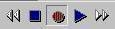,
muss der Zeitcursor jeweils verändert
werden und danach der entsprechende Wert (über Tastatur, Maus oder
u. U. 6D Eingabegerät) verändert werden.
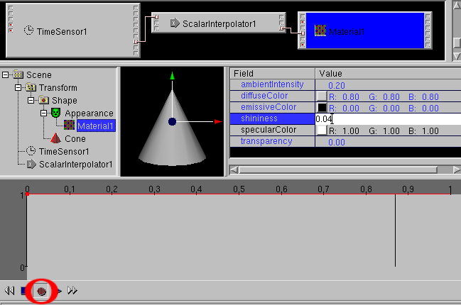
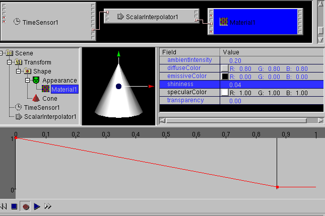
Wird das Aufnahmeicon zusammen mit dem Abspielicon gedrückt
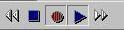, wird dauernd die Veränderung der Werte
(durch Mauseingabe oder u. U. 6D Eingabegerät)
aufgenommen.
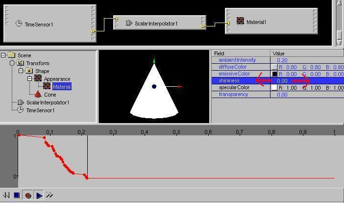
Die Mauseingabe bei der Aufname erfordert eine ruhige Hand.
Es ist nicht ungewöhnlich, dass man nach der Aufnahme einige
aufgenommene Werte löschen will.
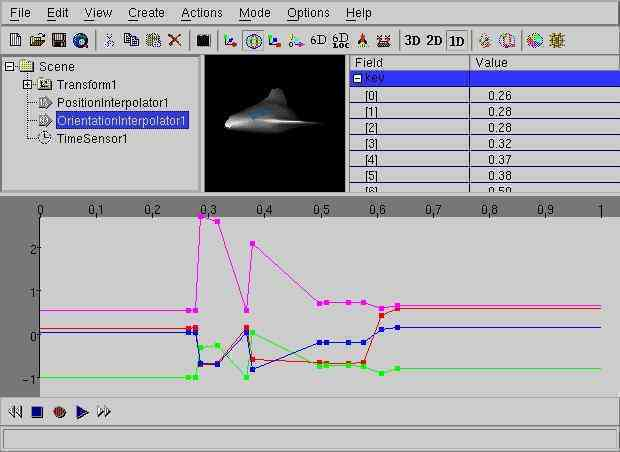
Dazu kann man einen Zeitbereich im Channelview Fenster durch Klicken und
gleichzeitigem Verschieben der Maus anwähen und den Menüepunkt
Bearbeiten -> Loeschen bzw. das Löschen Icon benutzen.
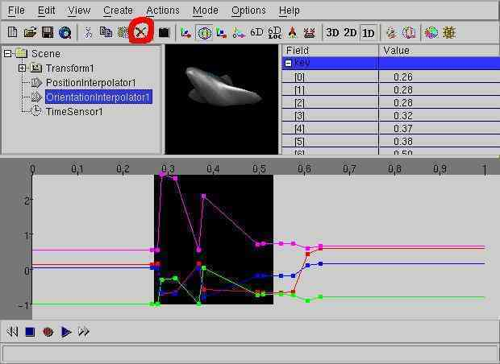
Dadurch werden die entsprechenden Werte gelöscht.
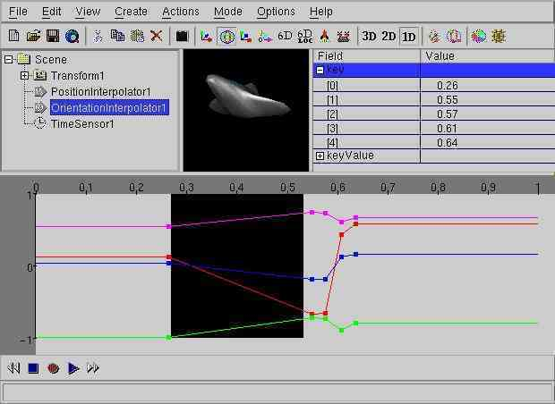
Beim Löschen muss man auf den zuletzt gemachten Mausklick achten.
Wird zum Beispiel nach dem Selektieren im channelview ein Objekt im
3D Fenster angeklickt, so wird dieses Objekt im Scenenbaum
angewählt. Der folgende Bearbeiten -> Loeschen
Befehl löscht dann dieses Objekt und nicht den Bereich im channelview.
Wird zum Beispiel nach dem Selektieren im channelview ein Element eines
MF-Feldes im fieldview angeklickt, löscht der folgende
Bearbeiten -> Loeschen Befehl das Element des MF-Feldes.
-
Farbkreis (neu in Version 0.19beta)
Für Farbwerte gibt es einen spezielles Eingabefenster, das an die
Stelle des FieldView Fensters tritt, wenn darin ein Farbwert
ausgewählt ist und das Colorcircle Icon gedrückt wird.

Im Farbkreis kann man dann mit einem Mausklick eine bestimmte Farbe
und im Farbbalken daneben anschliessend eine dunklere Variante
auswählen.

Der Aufbau des Farbkreises ist zur Zeit noch ziemlich langsam, wenn unter
Unix/Linux kein True/Directcolor Display zur Verfügung steht
(inzwischen kommt das nur noch bei sehr alten Graphikkarten vor).
Über den "OK" Button kehrt man zum normalen FieldView Fenster
zurück.
-
Script Editor (neu in Version 0.22beta)
Es gibt zwei Möglichkeiten, den Scripteditor zu starten:

-
Um einen neuen Scriptknoten zu erzeugen:
Über das "Script" icon (Menüpunkt
Erzeugen -> Programmierung -> Script),
-
Um einen selektierten Scriptknoten zu verändern:
Über das "Object Edit" icon
(Menüpunkt Aktion -> Objekt editieren),
Der geöffnete Scripteditor Dialog

erlaubt es, neue Felder/Events zum Scriptknoten hinzuzufügen (add),
sie zu verändern (change), zu kopieren (copy) oder zu
löschen (delete).
Zusätzlich kann man spezielle Funktionen wie
Initialize, Shutdown und Eventsprocessed hinzufügen.
Drücken Sie "OK" um die Arbeit am Scriptknoten zu beenden.
-
URL Editor (neu in Version 0.22beta)
Das "url"-Feld (das den ECMAscript (javascript) Code eines Scriptknotens
enthalten kann) kann in einem Texteditor verändert werden (edit).
Über den Menüpunkt
Optionen -> Text/Objekteditor Einstellungen
kann der Texteditor ausgewählt werden.
Ist das "url"-Feld leer, wird ein Schema eines ECMAscripts erzeugt.
Um den Texteditor zu starten, muss ein Script Knoten angewählt werden
und das "URL editieren" icon (oder Menüpunkt
Aktion -> URL editieren benutzt werden).

Der URL Editor kann übrigens auch zum Verändern des Dateiinhalts
einer URL für lokale Filmdateien (".mpeg") beim Movietexture Knoten,
für lokale Sounddateien (".wav") beim Audioclip Knoten und
für lokale Bilddateien (".jpg"/".png") beim Imagetexture Knoten
verwendet werden.
Ein passendes Programm wurde oft schon bei der Kompilierung ausgewählt
(zum Beispiel gimp für Bilddateien oder audacity für Sounddateien).
Wenn kein passendes Programm konfiguriert wurde, wird zuerst nach einem
passenden Programm gefragt. The Programme können mit
Optionen -> Text/Objekt Editor Einstellungen... verändert
werden.
-
Field pipe(neu in version 0.29beta)
Einer der mächtigsten Möglichkeiten um Feldwerte zu ändern
ist die Field pipe. Damit ist es möglich, Feldwerte mit einem
beliebigen externen Programm zu verändern.
Im Normalfall hat man dieses externe Programm noch nicht, die Field pipe ist
also vor allem wichtig für einen Benutzer mit
Programmierfähigkeiten.
Neben der hier beschriebenen Field pipe fü:r einfache Felder ist es
auch möglich, die Field pipe
fü ganze Szenengraphzweige ausführen zu lassen.
Wenn ein SF-Field oder MF-Field im Fieldview Fenster angewählt ist
und Aktion -> field pipe benutzt wird, dann wird im Fall eines
SF-Field eine Zeile mit dem Fieldwert in eine Datei geschrieben.
Im Fall eines MF-Field werden genausoviele Zeilen wie die Zahl der
SF-Werte im MF-Field geschrieben.
Wird zum Beispiel das folgende TextureTransform.scale Field

(ein SFVec2f Field) angewählt, werden die Werte
1 1
in die Datei geschrieben.
Wird zum Beispiel das folgende Color.color Field

(ein MFColor Field) angewählt, werden die Werte
0 0.5 0
0.5 0 0
0 0 0.5
0.5 0.5 0
0.5 0 0.5
0 0.5 0.5
in die Datei geschrieben.
Die Datei endet mit dem Zeichen für eine neue Zeile.
Wenn Aktion -> field pipe benutzt wird, öffnet sich ein
Dialog, der nach eine Kommandozeile fragt. Diese Kommandozeile kann
benutzt werden um ein kompiliertes Programm (zum Beispiel geschrieben
Programmier Sprachen wie Ada, C, C++ oder Fortran) oder einen Interpreter
mit einem Programm in einer interpretierten Sprache (zum Beispiel geschrieben
in einer Programmiersprache wie awk, perl oder python) zu starten.
Die Kommandzeile wird intern gestart mit
Kommandozeile < file > outputfile
was dazu führt, dass jede Zeile der Datei file als Standardeingabe
mit der Kommandozeile verarbeitet wird und das Ergebnis von der
Standartausgabe in der Datei outputfile geschrieben wird.
Wenn die geschriebene Datei outputfile die gleiche oder passende
Struktur wie die das verarbeitete field/die Eingabedatei hat (zum Beispiel
für das SFVec3f Beispiel)
2 1
oder für das MFColor Beispiel
1 0.5 0
0.5 1 0
0 0 0.5
0.5 0.5 0
0.5 0 0.5
0 0.5 0.5
Dabei ist es wichtig, dass Farbwert Fliesskommazahlen im Bereich 0 bis
1 sind. Der Inhalt der Ausgabedatei wird als neuer Field-Wert benutzt
und die zwischenzeitlich angelegten Eingabe/Ausgabe-Dateien werden
gelöscht.
Das allereinfachste Beispiel einer field pipe ist die Benutzung des
"echo" Systemkommandos.
Die Kommandozeile
echo ir gend was
gibt einfach die Argumente
ir gend was
zurück. In einem einfachen Beispiel kann das genutzt werden, um
die Werte "1 1" in "2 1" durch Benutzung von
echo 2 1
als die Kommandozeile im Field pipe dialog zu verändern.
Für das folgende kompliziertere (aber auch sinnvollere) Beispiel
wird die awk Programmiersprache benutzt. Awk ist eine interpretierte
Sprache, die ziemlich ähnlich wie die Programmiersprache C aussieht.
Awk ist sehr praktisch für diesen Zweck, denn es zerhackt eine
Eingabezeile automatisch in einzelne Werte und man kann komplette
Programme in der Eingabezeile angeben.
Wird die folgende Kommandozeile
awk '{print $1 + 0.1 , $2 + 0.2 , $3 + 0.35}'
als Field pipe für das folgende MFColor Feld
0 0.5 0
0.5 0 0
0 0 0.5
0.5 0.5 0
0.5 0 0.5
0 0.5 0.5
benutzt, dann ist das Resultat
0.1 0.7 0.35
0.6 0.2 0.35
0.1 0.2 0.85
0.6 0.7 0.35
0.6 0.2 0.85
0.1 0.7 0.85
Wird dieses MFColor Feld für die Farben der Ecken eines
IndexedFaceSet Würfels benutzt, dann werden alles Farben ein bisschen
heller, ein bisschen grüner und blauer.

Das gleiche Beispiel in der Sprache C erfordert, dass man ein Programm
wie das folgende schreibt:
#include
int main(int argc, char** argv)
{
while(!feof(stdin)) {
float c1, c2, c3;
scanf("%f %f %f", &c1, &c2, &c3);
printf("%g %g %g\n", c1 + 0.1, c2 + 0.2, c3 + 0.35);
}
return 0;
}
Dieses Programm muss kompiliert werden, wenn zum Beispiel diese Datei
main.c genannt wird, dann braucht man ein Kommando wie
cc -o /tmp/a.exe main.c
auf der Kommandozeile) und man müsste sowas wie
/tmp/a.exe
im Field pipe Dialog benutzen.
Eine der einfachsten Anwendungen des UNIX echo Kommandos in einer
field pipe ist das löschen von Knoten über
echo
für den entsprechenden Vaterknoten/das entsprechende Feld.
Bevor man den Scripteditor Dialog benutzen kann, muss man planen,
welche Datentypen und eventIn/eventOut Informationen die Knoten
haben, die man anschliessen will. Dazu muss man
die Knotenbeschreibung des
VRML standards (zum Beispiel über den Menüpunkt
Hilfe -> Name des gerade selektierten Knoten lesen
(oder ein entsprechendes Buch benutzen).
Zum schnellen Ausprobieren kann es dagegen angenehmer sein, das
vereinfachte Skriptbau-Verfahren zu benutzen.
Erzeugen Sie einen "leeren" Scriptknoten mit dem "Script" icon
(oder benutzen Sie den Menüpunkt Erzeugen -> Programmierung -> Script).
Gemäss der
"Weg da!" Philosophie des ursprünglichen dune Projekts
drücken Sie einfach nur "OK" im Scripteditor Dialog (siehe oben).
Jetzt wird das RouteView Fenster für die weitere Arbeit benutzt.

Scriptknoten haben ein spezielles "connect anything" ("verbinde alles")
eventOut.
Wenn man draufklickt, die Maustaste festhält und die Maus verschiebt
("drag") wird eine weisse Route gezeichent

Wenn man die Maustaste gedrückt hält, kann man sehen, dass man diese
Route (wie beim "normalen" Routing) an eventIns anderer Knoten anschliessen
kann,

dass aber (im Gegensatz zum "normal" Routing) die Farbe dieser Route
(also eigentlich der Datentyp) mit dem abgefragten eventIn wechselt.

Wenn man die Maustaste loslässt, wird die Route vollendet.

Entsprechend lässt sich der spezielle "connect anything" eventIn
des Scriptknotens benutzen

und mit dem eventOut eines anderen Knoten verbunden.

Jetzt müssen Sie noch das "url" Feld des Scriptknoten verändern.
Neben der Benutzung von urledit können sie
auch den Scriptknoten im SceneTree Fenster und das
"url" Feld im FieldView Fenster selektieren und dann

das "Object Edit" Icon drücken (oder benutzen den Menüpunkt
Aktion -> Objekt editieren).

Nun wird "white_dune" versuchen einen externen Editor zu starten -
eingefleischte UNIX Benutzer benutzen "xterm -e vi", das ist der
Default unter Linux/UNIX ("xedit" für MacOSX, "edit" für M$Windows)
wenn $WINEDITOR nicht beim ersten Programmlauf gesetzt war.
Man kann die Editoreinstellung mit dem
Options -> Texteditor Settings ... Menüpunkt ändern.
Im Edit Fenster sehen Sie ein Schema des benötigten javascript Codes.

Benutzen Sie den Editor, um den Javascript code zu vervollständigen,
dann speichern und verlassen Sie den Editor
- im Fall des vi Editors benutzen Sie die Tastenkombination :wq
Benutzen Sie Options -> ECMAscript settings um einzustellen,
welche erweiterten Kommentare Sie im Schema haben wollen.
Per default werden sehr viele Kommentare in das Skript geschrieben.
Das ist zwar sehr nützlich für Anfänger, weil dann sofort
alle mit den benutzten Datentypen möglichen Befehle schon im
Script bereitstehen. Allerdings ist es auch ziemlich unübersichtlich.
Benutzer mit etwas Programmiererfahrung tendieren dazu, die Einstellungen
in Options -> ECMAscript settings so zu setzen, dass nur der
fest verdrahte Kommentar über den jeweils benutzen Datentyp übrig
bleibt.
X3DOM, ein X3D browser im
Webbrowser, unterstützt keine X3D Script-Knoten, sondern nur
javascript Knoten. Trotzdem kann im X3DOM mode (initiert durch die
"Starte das naechste Mal mit X3DOM Unterstuetzung" Option oder die
Kommandozeilenoption "-x3dom") das
vereinfachte Skriptbau-Verfahren
angewendet werden.
Dabei geht man wie beim vereinfachte Skriptbau-Verfahren vor, nur
dass ein neuer "x3domscript:"-Eintrag in der Script-URL entsteht.
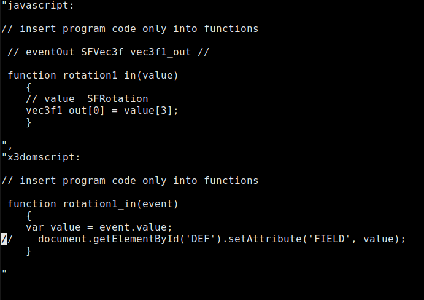
Da X3DOM nur Skripting analog "directOutput" unterstützt, muss
dabei statt der eventOut-Variablen ein Zugriff über den "DEF" name
(bzw. "id") des Ziel-Knotens und des Ziel-Feldnamens angegeben werden.
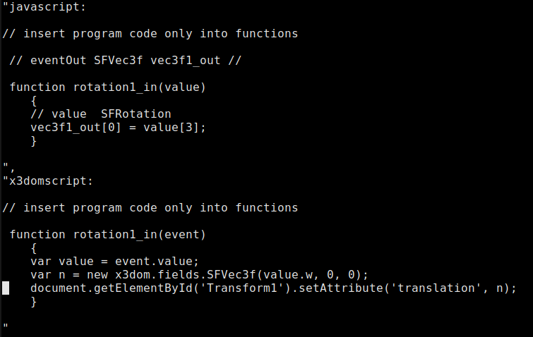
Beim Preview/Export nach X3DOM werden dann alle nötigen Einträge
für X3DOM in der X3D-Datei angepasst.
-
In der Computergraphik bedeuten NURBS eine komplizierte Rechenvorschrift,
mit deren Hilfe sich beliebige Flächen und Linien/Kurven im Raum sehr
kompakt darstellen lassen.
Gerade für eine Netzwerkstandard wie VRML ist die Unterstützung
von NURBS deshalb ein grosser Vorteil, da dabei nicht die Daten aller Eckpunkte
eines Flächennetzes über ein Netzwerk
übertragen werden müssen, sondern nur eine relative kleiner
Anzahl von Zahlenwerten, mit denen die Eckpunkte berechnet werden
können.
Das lohnt sich, da in der Vergangenheit die Rechenleistung sehr viel
stärker
gestiegen ist als die Netzwerkgeschwindigkeit (zum Vergleich: der Rechner
der 1969 das erste Zeichen ("L" von "LOGIN") über das Internetprotokoll
übertragen hat, war ein Honeywell DDP-516 minicomputer mit 12KB Speicher,
einer Taktfrequenz von 1.1 Mhz (wobei viele Takte für einen Computerbefehl
benötigt wurden) und dem Gewicht einer halben Tonne. Dieser
Rechner benutzte eine Netzwerkleitung mit 50000 baud. Das entspricht
ungefähr der Rechenleistung eines einfachen Taschenrechners und der
Netzwerkverbindung eines modernen Telefonmodems).
Deswegen wurden NURBS Knoten nicht nur zum X3D Standard hinzugefügt,
sondern im Jahr 2002 auch zum VRML97 Standard (VRML97 amendment 1).
Piegl und Tiller schreiben in "The NURBS book", NURBS wäre ein Akronym
für "Nobody Understands nonuniform Rational Basis Splines"
(niemand versteht verschiedenartig gebrochene Grund-Brettchen).
Um mit einem NURBS Modeller zu arbeiten, braucht man die entsprechende
Mathematik natürlich nicht komplett zu verstehen. Allerdings kann
es für die Benutzung eines Programms wie white_dune (das Zugriff
auf alle Zahlenwerte der NURBS Flächen/Kurven bietet) ein Einblick
in die NURBS Grundlagen sinnvoll sein.
Erstellt man in white_dune eine NURBS-Kurve (mit
Erzeugen->VRML97 Amendment 1->NurbsCurve /OK), verschiebt eines
der weissen Kästchen und klappt alle Zahlenwerte im FieldView auf

so erkennt man, dass eine NURBS-Kurve im wesentlichen aus 4 Datenarten
besteht.
-
Kontrollpunkte (controlPoint):
Das sind die mit weissen Kästchen markierten Punkte.
Verschiebt man ein Kästchen, verschiebt sich ein Teil der Kurve
entsprechend.

Kontrollpunkte sind die wichtigsten Elemente in white_dune, um NURBS
zu beeinflussen.
-
Gewichte (weight):
Diese Werten bestimmen den Einfluss eines einzelnen Kontrollpunkts
auf die Kurve. Das Wort Gewicht erinnert an die Zeit vor dem Computerzeitalter,
als Graphiker Kurven mit Holzbrettchen (sogennanten Straklatten) und
Bleigewichten gestaltet haben.
Bleibt der Kontrollpunkt auf der gleichen Stelle und
erhöht man das entsprechende Gewicht

so wird die Kurve zum Kontrollpunkt hingezogen.
Obwohl hier der Kontrollpunkt auf der gleichen Stelle liegt, hat sich
sein Wert verändert. Das liegt daran, dass es zwei mathematisch
gleichwertige NURBS-Formeln gibt. White_dune benutzt die bei VRML
übliche Formel.
-
Knotenvektoren (knot):
Knotenvektoren bestimmen unter anderem (***)
ob ein Kontrollpunkt von der
Kurve getroffen wird und ob eine Kante auftritt. Dazu müssen die
Werte an der entsprechenden Stelle "Grad" "(Ordnung -1)" mal wiederholt werden.

-
Ordnung (order): (auch Grad+1 (degree+1))
Ueber diese Zahl wird festgelegt, wie weit der Einfluss eines
Kontrollpunkts reicht.

Der verbliebene Wert "tessellation" hat keinen mathematischen, sondern
einen praktischen Hintergrund. Er legt fest, mit wievielen Punkten/Ecken
die Kurve dargestellt wird.

Das Verändern dieses Werts erlaubt eine einfache Anpassung an
die Graphikleistung eines Rechners.

Per default (Wert "0") benutzt white_dune (das auch auf schwachen Rechnern
laufen soll) bei Objekten mit sehr vielen Kontrollpunkten zu kleine Werte
für "tessellation".
Ein Beispiel zeigt eine Nurbsfläche, die aus einer Kugel konvertiert
wurde und bei der einige Kontrollpunkte herausgezogen wurden.

Nur mit einem hohen Wert für "tessellation" zeigt sich die
"wahre" Form des Objekts.

-
Mit White_dune kann man Nurbs(Patch)Surface Knoten erstellen
(z.B. mit Erzeugen -> VRML97 Amendment 1 -> NurbsSurface -> plain/OK).
Man kann die entstandene Fläche verändern, indem man die weissen
Kästchen mit der Maus verschiebt.

Das verändert die Kontrolpunkte des Nurbs(Patch)Surface Knotens.

Mit dieser Methode kann man white_dune am sinnvollsten bei der Herstellung von
Landschaften mit Dünen

einsetzen, die Methode ist aber nicht sehr sinnvoll für die meisten
anderen Aufgaben.
Viele Objekte erfordern symetrische Modellierung, die eine Seite
des Objekts soll so aussehen, wie die andere Seite.
In white_dune, kann das mit dem Menüpunkt
Aktion -> X symetric modelling erreicht werden.
Wenn dieser Menüpunkt aktiviert ist, wird jede Bewegung von den
Kontrollpunkten der einen Seite

auf die andere Seite übertragen,

und es ist ziemlich einfach, eine ziemlich komplizierte symetrische
Nurbs(Patch)Surface Fläche zu erzeugen.

Die X Richtung für die symetrische Modellierung
wurde wegen des
Local Input Mode gewählt.
Es ist möglich, das Verschieben der Kontrollpunkte auf
eine Linie oder Fläche zu beschränkten.
Wird nur eine der Settings Modus -> Nur x, Modus -> Nur y
oder Modus -> Nur z (bzw. ihre Icons mit jeweils einem Pfeil
in x (rot), y (grün) oder z (blau)) benutzt, so lassen sich die Punkte
nur in dieser Richtung verschieben. Dabei wird allerdings nicht die
Ausrichtung im gesamten Raum benutzt, sondern die Ausrichtung der
entsprechenden Geometrie. Es ändert sich also einweder nur der
x, der y oder der z Wert des verschobenen Kontrollpunkts.
Ist zum Beispiel nur Modus -> Nur y bzw. das zweite der
Pfeilicons benutzt

ist die Bewegung der Kontrollpunkte auf die y-Richtung beschränkt.
Das ist auch die Richtung, auf die der grüne Pfeil des letzten
für den entsprechenden Körper zuständigen Transform-Knotens
zeigt.


Werden zwei der Settings Modus -> Nur x, Modus -> Nur y
oder Modus -> Nur z (bzw. ihre Icons mit jeweils einem Pfeil
für die x (rot), y (grün) oder z (blau) Richtung) benutzt, so lassen
sich die Punkte innerhalb der entsprechenden Ebene verschieben.
Ist zum Beispiel nur Modus -> Nur x und Modus -> Nur z
bzw. das Erste und das Dritte der Pfeilicons benutzt

ist die Bewegung der Kontrollpunkte auf die xz-Ebene beschränkt.
Sind alle oder kein Icon benutzt,


dann besteht keine Beschränkung, bei einem Verschieben mit der Maus
können sowohl die x, y und z Werte geändert werden.
Die Entscheidung ob der symetrische Teil eines Nurbs(Patch)Surface Knoten
mitbewegt wird, hängt von der Entscheidung ab, ob die Zahlenwerte der
Kontrollpunkte/Gewichte fast gleich ist.
Sie sind fast gleich, wenn der Abstand der absoluten Werte kleiner ist
als der Wert "Epsilon". Die Größe von "Epsilon" kann über
den Optionen -> Allgemeine Einstellungen Dialog eingestellt
werden.
Wenn symetrische Modellierung angewählt ist, schnappen fast gleiche
Punkte zusammen und werden zusammen bewegt.
Das kann benutzt werden, um offene Nurbs(Patch)Surface Flächen zu
schliessen,
aber mehrere Kontrollpunkte auf einem Platz erzeugen eine Ecke/Kante.

Es ist auch möglich, mehrere Kontrollpunkte auf einmal zu bewegen.
Dazu wird ein weisses Kästchen mit der mittleren Maustaste angeklickt,
das weisse Kästchen färbt sich daraufhin grün.
Werden weitere Kästchen mit der mittleren Maustaste angeklickt,
färben die sich ebenfalls grün.


Wird eines der grünen Kästchen mit Hilfe der linken Maustaste
wegbewegt, folgen die anderen grünen Kächen.
Ist Aktion -> X symetric modelling aktiviert, werden auch die
gegenüberliegenden Kontrollpunkte entsprechend mitbewegt.

Wenn Aktion -> X symetric modelling aktiviert ist, ist es nicht
möglich, zwei symetrische, auf genau gegen&uuuml;berliegenden Seiten
liegende Kästchen auszuwählen.

Der zweite mittlere Mausklick bleibt dann wirkungslos.

Es ist auch möglich mehrere weisse Kästchen auf einmal zu
selektieren, dazu muss man mit der rechten Maustaste einen unsichtbaren
Kasten aufziehen. Dazu muss man z.B. den Mauszeiger in die linke obere Ecke des
unsichtbaren Kastens positionieren,

die rechte Maustaste drücken und gedrückt halten, den Mauszeiger in
die untere rechte Ecke positionieren und dann die rechte Maustaste loslassen.
Nachdem die Maustaste losgelassen wurde, werden alle im unsichtbaren Kasten
enthaltenen weissen Kästchen grün, das heisst selektiert.

Wenn Aktion -> X symetric modelling dabei aktiviert ist, werden dabei
ebenfalls einer jeweils gegenüber liegenden Kästchen deselektiert.
Eine neu entstandene Nurbs(Patch)Surface
Fläche existiert (in Einklang mit den
VRML Standards) per default nur einseitig (was wichtig ist,
wenn die Oberfläche nicht geschlossen ist): das Feld "solid" hat den
Wert TRUE (wahr).

In den meisten Fällen ist das nicht sehr sinnvoll:
Um die Oberfläche doppelseitig zu machen, wird das Feld "solid"
im FieldView Fenster auf FALSE (falsch) gesetzt.

Oft ist auch eine zweiseitige Fläche nicht besonders nützlich, um
einen voluminösen Körper zu bilden.
In diesem Fall ist es sinnvoll, einen NurbsGroup-(NURBS Gruppen-)Knoten zu
erzeugen,

den Körper mit dem Nurbs(Patch)Surface
Knoten in den NurbsGroup-Knoten zu verschieben

und eine Kopie des Körpers mit dem Nurbs(Patch)Surface Knoten
zusätzlich im NurbsGroup-Knoten zu erzeugen.
Um eine Kopie anzulegen, zieht man das Shape Icon mit der Maus ins
NurbsGroup icon und hält dann die Kontroltaste ("Ctrl") gedrückt,
während die Maustaste noch gegedrückt ist.

Weil in diesem Beispiel das Feld "solid" immer noch FALSE ist, kann man
ein weit verbreitetes Problem des realtime 3D demonstrieren, wenn die
Farbe eines Körpers verändert wird.

Zu dünne Wände (auch "z-fighting" genannt).
Wenn sie einen Kontrollpunkt von einem Nurbs(Patch)Surface Knoten etwas
nach oben verschieben, um dem Körper mehr Volumen zu geben,
kann die bilderzeugende Hardware und Software nicht mehr so leicht
entscheiden, welche der beiden nah aneinanderliegende Flächen
mit welcher Farbe näher zum Betrachter angeordnet ist.

Der Effekt ist im allgemeinen nicht vorhersehbar, er kann sich mit dem
Betrachtungswinkel, der benutzten Software (zum Beispiel VRML Browser
oder Graphiktreiber) und sogar mit der benutzten Graphikkarte ändern.
Um das Problem zu vermeiden, müssen beide "solid" Felder zu TRUE
zurückgeschalten werden und das "ccw" ("Counter Clock Wise", "gegen
den Uhrzeitersinn") Feld muss sich zwischen der oberen und unteren
einseitigen Fläche unterscheiden.

Jetzt können die nichtbegrenzenden Kontrollpunkte der Nurbs(Patch)Surface
Knoten verschoben werden, um dem Körper mehr Volumen zu geben.

Der NurbsGroup Knoten ist im VRML Standard verantwortlich dafür, dass
die Begrenzungen der enthaltenen Nurbs(Patch)Surface Knoten ohne Lücken
gezeichnet werden,
wenn die Kontrollpunkte der Begrenzungen der Nurbs(Patch)Surface Knoten
identisch sind.
In white_dune, erlaubt der NurbsGroup Knoten auch X symetrische Modellierung.
Änderungen eines Kontrollpunkts werden an alle Nurbs(Patch)Surface Knoten
weitergegeben,
die direkt (oder über einem Shape Knoten) einem NurbsGroup Knoten
enthalten sind.
Das macht es möglich, die Kontrollpunkte der Begrenzung eines
Nurbs(Patch)Surfaceknoten zu verschieben und dabei das ganze Objekt
geschlossen zu
halten, weil dann die Kontrollpunkte der angrenzenden Nurbs(Patch)Surface Knoten
mitverschoben werden.

Am Ende sollte man darauf achten, dass der NurbGroup Knoten in einen
Transform Knoten enthalten ist, sonst kann das Objekt nicht
verschoben/rotiert/skaliert usw. werden.

-
Wenn geschlossene Nurbs(Patch)Surface
Knoten das Ziel sind, kann es nützlich
sein, schon mit einem geschlossenen Körper zu beginnen.
White_dune erlaubt es nicht, eine beliebige Mesh (einen IndexedFaceSet
Knoten) in einen Nurbs(Patch)Surface
Knoten zu konvertieren, aber es erlaubt es
die primitiven VRML Knoten
(box, cone, cylinder und sphere) in einen Nurbs(Patch)Surface Knoten zu
konvertieren. White_dune erlaubt auch, einen NurbsCurve Knoten in
einen Nurbs(Patch)Surface Knoten (als Rotationskörper) zu konvertieren.
Seit Version 0.27beta erlaubt es white_dune auch einen NurbsCurve Knoten
in ein Superextrusion PROTO (siehe unten) zu konvertieren
und erlaubt es, ein SuperEllipsoid PROTO oder SuperShape PROTO (siehe unten)
in einen Nurbs(Patch)Surface Knoten zu konvertieren (durch Annäherung).
-
Box
Um einen Box (Würfel) Knoten in einen Nurbs(Patch)Surface Knoten zu
konvertieren,
muss ein Box Knoten im Szenengraph angewählt werden

und der Menüpunkt Umwandeln -> in Nurbs(Patch)Surface umwandeln
benutzt werden.

Wenn die "6 Plains" (6 Flächen) Schaltfläche nicht gedrückt
ist,
wird ein einziger Nurbs(Patch)Surface Knoten erzeugt.

Wenn die "6 Plains" Schaltfläche gedrückt ist, werden 6
Flächen in einem NurbsGroup Knoten erzeugt.

-
Cone, Cylinder und Sphere
Die Konversion dieser primitiven Körper ist ähnlich zu der
Konversion eines Box Knotens, aber die Objekte werden intern mit einer
drehenden Linie (besser NurbsCurve) erzeugt.
Zum Beispiel beim Ergebnis einer Cylinder Konversion eines

sieht man, dass es Kontrollpunkte gibt, die die Oberfläche
berühren. Dies wird erreicht, indem Werte im Knotenvektor
wiederholt werden. Als Konsequenz entsteht eine Kante, wenn der
Kontrollpunkt verschoben wird.

-
Nurbs(Patch)Surface aus NurbsCurve (über Drehung)
Zuerst muss ein NurbsCurve Knoten im
Scenengraph angewählt werden

Wenn ein NurbsCurve Knoten erzeugt wird (e.g. via Erzeugen ->
VRML97 Amendment 1 -> NurbsCurve ) muss in Betracht gezogen werden,
ob X symetrische Modellierung benutzt wird.
Der NurbsCurve Erzeugungsdialog

bietet drei Möglichkeiten: Kurve entlang x, entlang y, entlang z Achse.
Nur wenn die Kurve um die y oder z Achse gedreht wird, ist
X symetrische Modellierung möglich. Deswegen ist es möglicherweise
vorzuziehen, einen NurbsCurve Knoten entlang der y oder z Achse zu
erzeugen.

Die Kurvenpunkte bilden die Seitenansicht des Drehkörpers.

Mit Umwandeln -> In Nurbs(Patch)Surface umwandeln geht es weiter.

Um X symetrische Modellierung möglich zu machen, sollte die
Schaltfläche
"Kurve vor der Drehung plätten"
gedrückt bleiben. Dabei werden alle Punkte in eine Ebene verschoben,
wobei der Abstand vom Nullpunkt erhalten bleibt.

Genau wie bei konvertierten Sphere, Cylinder und Cone Knoten, kann eine
Ecke entstehen, wenn die Kontrollpunkte verschoben werden.

Ziemlich ähnlich zur Drehung einer NurbsCurve ist das
scripted SuperRevolver PROTO.
Das SuperRevolver PROTO erzeugt einen NURBS surface basierten Körper
bei jeder Änderung einer ("geplätteten") 2D curve, aber als
scripted PROTO ist es nur indirekt Teil des Standards.
-
Bei Modellieren mit NURBS Knoten kommt oft der Wunsch auf, neue
Kontrollpunkte in einer Richtung einzufügen.

Mit dem Menüpunkt Aktion -> NURBS aendern ->
Graderhöhung (U/V) ist
das möglich, ohne die ässere Form zu verändern.

Mit den neuen Kontrollpunkten lassen sich neue Ausbuchtungen verwirklichen.

NURBS Neubau
(neu in Version 0.99pl1090)
-
Leider reicht die Graderhö:hung nicht aus, um komplexe NURBS
Körper zu modellieren. Es kann vorkommen, dass man viele neue
Kontrollpunkte braucht. In dem Fall bietet sich der Neubau des NURBS
Objekts an.
In einem einfachen Beispiel wird eine Kugel (Erzeugen -> Form
-> Sphere) in ein NURBS-Objekt verwandelt ( Umwandeln ->
In Nurbs(Patch)Surface umwandeln OK).

Dabei entstehen 45 neue Kontrollpunkte, die sich teilweise gegenseitig
verdecken.
Das ist zu wenig, um eine altmodische Sonne zu modellieren und
einzelne Sonnenstrahlen herauszuziehen.
Mit dem Anwählen von Nurbs(Patch)Surface
und Aktion -> NURBS aendern -> neue Kontrollpunkte
lassen sich viele Kontrollpunkte erzeugen

und

herausziehen.

-
NURBS Flächen werden oft als abgerundete Flächen angesehen.
Aber neben mehrfachen Kontrollpunkten und Knotvektor Werten,
kann das Setzen der u/vTesselation Wert einfach dazu benutzt werden,
um Objekte aus Einzelflächen (IndexedFaceSet Knoten) zu erzeugen.

Wenn zum Beispiel ein Sphere Knoten mit
Umwandeln -> In Nurbs(Patch)Surface umwandeln konvertiert wird

und kleine u/vTesselation Werte gesetzt werden,
entstehen nur sehr wenige Flächen.

Mit Umwandeln -> In IndexedFaceSet umwandeln kann das Resultat
in einen IndexedFaceSet Knoten verwandelt werden.

Um die Normalenvektoren loszuwerden, die die Farben der Flächen
verschwimmen lassen, muss der Normal Knoten vom IndexedFaceSet Knoten
entfernt werden.

Die folgende Tabelle zeigt, welche grundsätzlichen Körper
mit dem Setzen von u/vTesselation in Nurbs(Patch)Surface Knoten
aus konvertierten Primitiven erzeugt werden können.
| Köper | Konvertiert von | uTesselation | vTesselation |
| Tetraeder | Cone | 3 | 4 |
| 4-eckige Pyramide | Cone | 4 | 4 |
| Hexaeder | Sphere/Cylinder | 3 | 2 |
| Octaeder | Sphere/Cylinder | 4 | 2 |
| n-eckiges Prisma | Cylinder | n | >1 |
| | | |
Wenn eine Nurbs(Patch)Surface Fläche
(Erzeugen -> VRML97 Amendment 1 -> NurbsSurface ->
Fläche (Nurbs))
mit Grad 1 erzeugt wird

und uTesselation auf den Wert uDimension-1 und vTesselation auf
den Wert vDimension-1 gesetzt wird,
sind die sichtbaren Ecken und die Position der Handles (des
Nurbs(Patch)Surface Knotens) identisch, genauso, wie es bei einem
IndexedFaceSet Knoten wäre.

Mit dem Menüpunkt Umwandeln -> In IndexedFaceSet umwandeln
kann das Result in einen IndexedFaceSet Knoten verwandelt werden.

Um die Normalenvektoren loszuwerden, die die Farben der Flächen
verschwimmen lassen, muss der Normal Knoten vom IndexedFaceSet Knoten
entfernt werden.

Unglücklicherweise ist die Konversion von einem IndexedFaceSet Knoten
zurück in einen Nurbs(Patch)Surface Knoten schwierig oder zumindest
noch nicht implementiert...
-
Es ist möglich, aus einer NurbsCurve Animationsdaten zu gewinnen.
Dazu wird eine NURBS-Kurve und ein animierbares Objekt benötigt.

Selektiert man nun die NURBS-Kurve,

kann man mit Umwandeln -> in
PositionInterpolator kopieren und mit Umwandeln -> in
OrientationInterpolator kopieren XZ/XY/YZ Ebene ein
PositionInterpolator/OrientationInterpolator-Paar erzeugen. Dabei muss man
die Ebene wählen, die senkrecht auf der Drehachse steht.

Damit eine richtige VRML-Animation entsteht, muss noch ein TimeSensor-Knoten
eingefügt werden (Erzeugen -> Sensor -> TimeSensor).
Danach muss mit Routes -> zeige Knoten ganz oben
der TimeSensor-Knoten, die Interpolatoren und der Transform-Knoten so

mit Routes verbunden werden, dass eine Animation entsteht.
Wird nun TimeSensor.loop auf TRUE gestellt, folgt die Animation der NurbsCurve.
Der Menüpunkt Animation -> erzeuge Kurvenanimation fasst alle
diese Punkte zusammen. Dabei wird ein spezielles EXTERNPROTO erzeugt, das die
Informationen einer NurbsCurve (in der VRML97:2002 Variante) enthät. Dieses
EXTERNPROTO wird durch javascript-Knoten in einem Standard-VRML-Browser so
interpretiert, dass die Animation dargestellt wird. Für
nicht-Standard-VRML-Browser wie z.B. X3DOM, die keinen Script-Knoten kennen,
kann der CurveAnimation-Knoten in einen PositionInterpolator und
einen OrientationInterpolator umgewandelt werden. Das passiert beim
Exportieren von C/C++ sourcecode automatisch
Der CurveAnimation-Knoten enthält noch die Drehachse und das Feld "hover",
das angibt, ob sich ein animierter Knoten nur in der Drehachse dreht oder sich
noch zusätzlich so dreht, dass er der NurbsCurve folgt (bei einer nicht
flachen NurbsCurve in Richtung der Steigung der NurbsCurve).
In Version 0.99pl1050 wird der NurbsTrimmedSurface Knoten wirklich einsetzbar.
Die Defaults und das Verhalten von NurbsCurve2D sind darauf ausgelegt.
Wenn Sie NURBS Trimming ausprobieren wollen, steht
dieses Beispiel zur Verfügung.
Die Abkürzung "ccw" beim NurbsCurve2D Dialog bedeutet übrigens, dass
die erzeugte geschlossene Kurve entgegen dem Urzeigersinn (Counter Clock
Wise) orientiert ist.
Ist sie im Urzeigersinn orientiert, wird der Inhalt der Kurve ausgeschnitten,
sonst der Rest abgeschnitten.
Uebrigens muss diese Kurve immer geschlossen bleiben, sonst kann es zu
einem Absturz in der Graphikbibleothel "libGLU" kommen 8-(
Wird die Kurve ueber Griffe in white_dune verändert, bleibt sie
geschlossen.
White_dune unterstützt 3D-modelling, die auf der sogenannten
"superformula" ("Superformel") basiert.
pow(pow(fabs(cos(m * angle / 4.0) / a), n2) +
pow(fabs(sin(m * angle / 4.0) / b), n3), -1.0 / n1)
Diese Formel wurde vor einigen Jahren von einem Biologen gefunden und
kann benutzt werden, um n-symetrische Formen zu erzeugen, die Dingen aus der
Natur wie Blumen, Blättern, Insektenkörpern, Muscheln
oder Seesternen ähnlich sehen.

Diese Formen
wurden alle mit dem SuperShape PROTO erzeugt.
Superformula basierte Formen sind nicht von sich aus Teil von VRML97,
sondern sind über ein PROTO (selbst definierter VRML Knoten)
mit Scriptcode ("scripted PROTO") implementiert.
Superformula basierte Körper können entweder in einen
Extrusion Knoten oder in einen IndexedFaceSet Knoten umgewandelt werden.
IndexedFaceSet basierte superformula Körper können auch
einem Nurbs(Patch)Surface Knoten angenähert werden, um so einen Startpunkt
für weiteres NURBS-modelling zu haben.
-
Das SuperExtrusion PROTO benutzt die Superformel um ein 2D Polygon
in der X-Z-Fläche zu berechnen und formt daraus einen Körper
indem dieses Polygon in der Y-Richtung entlang einer Kurve wiederholt
wird.
Diese Kurve funktioniert entsprechend einer NurbsCurve und kann
verändert werden, indem man die Kontrollpunkte bewegt.
Dieser Körper kann in eine Extrusion umgewandelt werden und
einige seiner Parameter funktionieren wie bei einer Extrusion.
Anders als bei einer Extrusion werden die scale Parameter nicht
pro spine Punkt angewandt sondern über den ganzen spine
verschmiert.

-
Das SuperShape PROTO benutzt die Superformel um ein 2D Polygon
in der X-Z-Fläche zu berechnen und formt einen Körper,
indem die Superformel auch in der Y-Z-Fläche ähnlich
wie bei Kugelkoordinaten berechnet wird.

Dieser Körper kann in ein IndexedFaceSet umgewandelt werden
-
White_dune hat auch ein PROTO für ein Superellipsoid,
ein spezieller Fall des SuperShape. Es kann benutzt werden, um eine
Kugel,

eine Box, ein Zylinder,

ein Oktaeder und abgerundete Formen dieser Kürper


mit nur 2 Parametern zu erzeugen.
Wie das SuperShape PROTO hat das SuperEllpsoid PROTO ein Feld "border",
um z.B. auch Halbkugeln modellieren zu können.

Dieser Körper kann in ein IndexedFaceSet umgewandelt werden
-
Das SuperRevolver PROTO funktioniert ähnlich zur
Drehung einer NurbsCurve,
benutzt aber statt einer Drehung die Superformel und statt einer
dreidimensionalen Kurve eine zweidimensionale Kurve.
Die Defaultwerte für die Parameter der Superformel (a=1, b=1, m=0,
n1=1, n2=1, n3=1) beschreiben als 2D Fläche einen Kreis. Diese
Form erkennt man, wenn man einen SuperRevolver Körper von oben
betrachtet.
Anders als die Drehung einer NurbsCurve wird bei der Benutzung von
SuperRevolver nicht zwischen verschiedenen Objekten umgewandelt.
Stattdessen kann die 2D Nurbskurve jederzeit interaktiv verändert
werden und dadurch der SuperRevolver Körper verändert werden.

Es gibt auch ein Feld "pieceOfCake", das es erlaubt, "Kuchenstücke"
aus dem Körper zu schneiden.
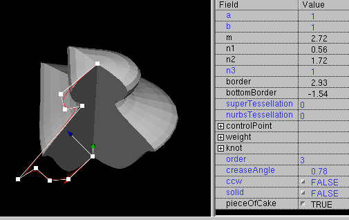
Subdivide Modellierung ist verfügbar via
(IndexedFace)Set -> subdivide
Kommando oder drücken von "s" wenn ein mesh basierter Knoten (z.B.
IndexedFaceSet, Box oder NurbsSurface) ausgewäht ist.
Subdivide benutzt den Catmull-Clark Algorithm um Objekte weicher zu machen.
Starten Sie mit einer ausgewähten Box mit passender Größe:

Benutzen Sie (IndexedFace)Set -> subdivide oder drücken Sie
"s"
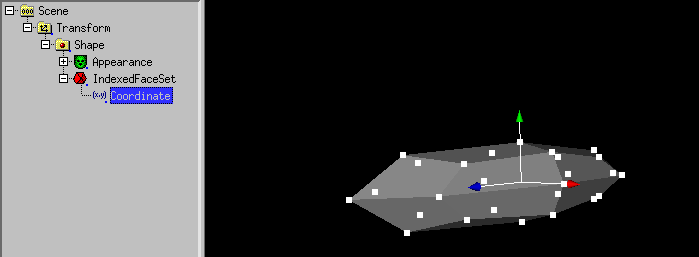
Benutzen Sie Auswahl -> Flächen und ziehen Sie die
angeklickete Fläche heraus noch mit der linken Maustaste festgehalten.
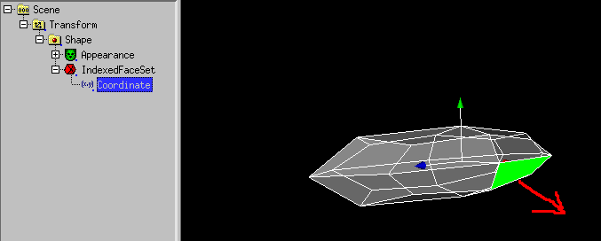
Um das Objekt noch weicher zu machen, benutzen Sie Aktion -> subdivide
oder drücken Sie "s"
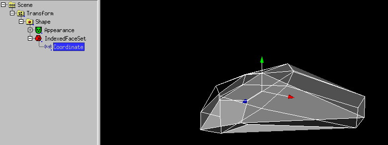
Um die Flächen zu verstecken, können Sie creaseAngle von
IndexedFaceSet setzen.
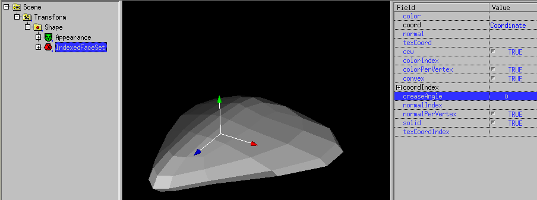
Seien Sie sich bewusst, dass es kein "eckiger" Kommando in white_dune gibt
ausser den "tessellation" Feldern in Nurbs(Patch)Surface or superformula
basierten Knoten.
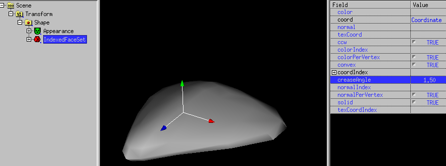
Deswegen ist es nützlich, oft edit -> undo zu benutzen
um ein subdivided objekt zu testen and zu modifizieren.
Leider funktioniert Subdivide nicht mit allen Flächen, sondern nur mit
geschlossenen Objekten. Deswegen ist Subdivide bei Auswahl eines SuperExtrusion
Knotens ausgegraut.
Analog zu Flächen, Linien können ausgewählt werden mit
Auswahl -> Linien
.
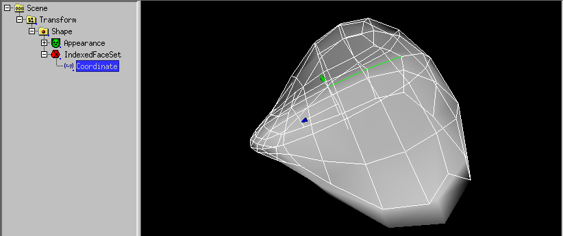
Ausgewählte Linien lines können mit der Maus verschoben werden.
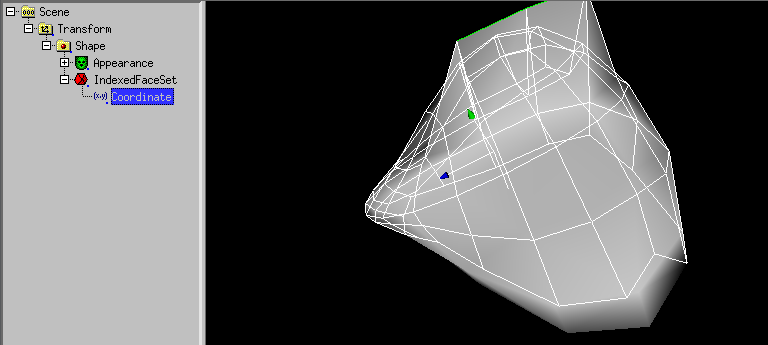
Wenn der angewälte X3D-Befehl ein IndexedFaceSet ist (oder zum
IndexedFacedSet konvertiert wurde),steht ein spezielle Form der Extrusion
zur Verfügung. Dabei kann eine oder mehrere Flächen eines
IndexedFaceSet herausgezogen oder hineingedrückt werden.
Dazu muss Auswahl -> Flächen und Coordinate von IndexedFaceSet
ausgewählt sein.
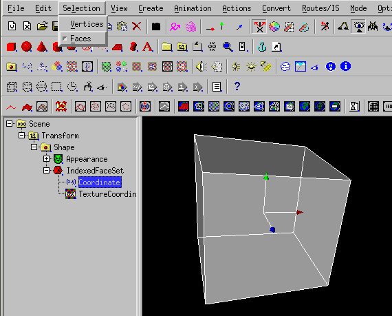
Mit der mittleren Maustaste lassen sich ein oder mehrere Flächen
anwählen.
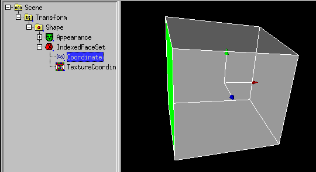
Nach (IndexedFace)Set -> Extrude Face lassen sich
mit der linken Maustaste Flächen herausziehen.
Ist das X Symetrie icon  angewählt, werden auch aus der anderen Seite Flächen herausgezogen.
angewählt, werden auch aus der anderen Seite Flächen herausgezogen.

Genauso lassen sich Flächen in den Körper hineindrücken.
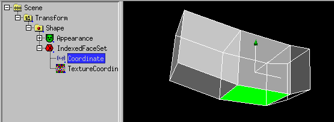
Das macht Sinn im Zusammenhang mit
Subdivide Modellierung.
Actions -> (IndexedFace)Set -> Extrude Face
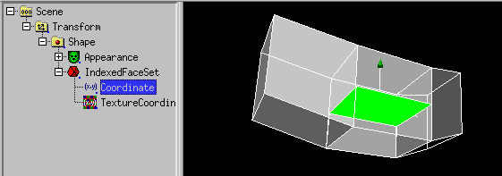
(IndexedFace)Set -> Subdivide
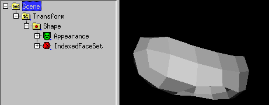
(IndexedFace)Set -> Subdivide
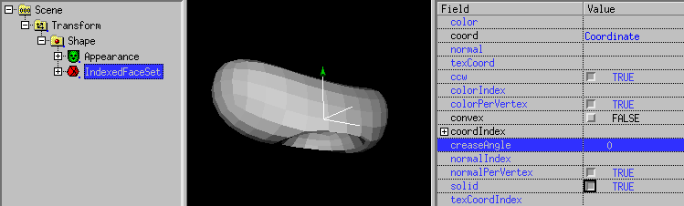
Das Ganze mit angepasstem IndexedFaceSet.creaseAngle
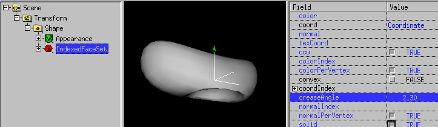
Seit Version 0.29beta können auch Coordinate basierte Knoten
(wie IndexedFaceSet ("Mesh"), IndexedLineSet oder PointSet)
genauso im 3D Preview Fenster interaktiv verändert werden wie die
Kontrollpunkte eines NURBS Körpers.
Bei Knoten mit sehr vielen Punkten, ist das (noch) nur sinnvoll um kleinere
Details zu verändern.
Es gibt einige nützliche modelling Aktionen im Aktion Menü:
-
Umklappen (x/y/z)
Das Umklappen Kommando kann für ganze Szenengraph Zweige benutzt werden.
Es ändert alle Transform und Shape (Unter-)Knoten von x zu -x,
y zu -y oder z zu -z. Das ist nützlich um eine Zweig von Objekten
nach einer Verdopplung zu spiegeln.
Bei schwierigen Objekten wie Cone oder IndexedFaceSet wird versucht,
das Ergebnis konsistent zu halten. Ein Cone (Kegel) kann nicht in
der y-Richtung umgeklappt werden, deswegen wird er in diesem Fall
vorher in einen Nurbs(Patch)Surface Knoten umgewandelt.
Für einen Oberflächenknoten wie IndexedFaceSet, das Umklappen
Kommando beachtet die normal und ccw Fields. Ein Coordinate Knoten
in einem IndexedFaceSet unterstützt auch das Umklappen
Kommando, aber dann muss man selber auf das normal und ccw Field aufpassen.
-
Austauschen (xy/yz/xz)
Das Austauschen Kommando kann auch für ganze Scenengraph Zweige benutzt
werden.
Zum Beispiel vertauscht das xy Kommando die x und y Wert von allen passenden
Knoten.
-
Verschiebe zu (x/y/z)
Dieses Kommando funktioniert nur für NURBS und Coordinate
Knoten. Es setzt alle selektierten Punkte in der x, y oder z Richtung auf den
angegebenen Wert.
-
Setze Drehpunkt zu (Mitte min/max x/y/z)
Dieses Kommando erfordert die Kombination
Transform -> Shape -> Geometrieknoten
wobei der Geometrieknoten (e.g. Box, Sphere, IndexedFaceSet etc.)
angewählt sein muss.
Das Kommando setzt den Mittelpunkt (Drehpunkt) des Transform Knotens auf
den Mittelpunkt oder die Grenzen des umschliessenden Quaders. Das ist
nützlich, wenn man mit Modellierungwerkzeugen arbeitet, die VRML
Objekte mit einem Drehpunkt exportieren, der weit weg vom Objekt liegt.
Aktion -> Konvexe Huelle erzeugt ein bauchiges IndexedFaceSet
aus Objekten in einem Szenegraph Zweig (es kann auch für einen ganzen
Scenengraph benutzt werden, aber das ist oft nicht sinnvoll).
Nur die Transform Knoten Daten, die Mesh-Punkte, Linien-Punkte und PointSet
Knoten Punkte werden benutzt um ein neues IndexedFaceSet zu erzeugen.
Im folgenden Beispiel wird eine Kugel und ein PointSet mit 2 Punkten gezeigt:
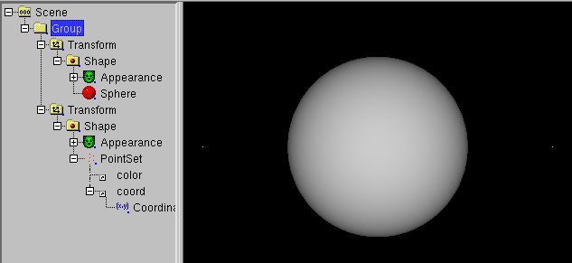
Die Benutzung von Actions -> Convex hull resultiert in
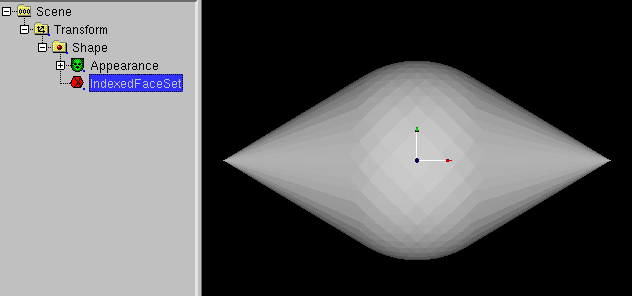
Es werden 2 symetrische NurbsSurface und 2 symetrische NurbsCurve werden
hinzugefügt
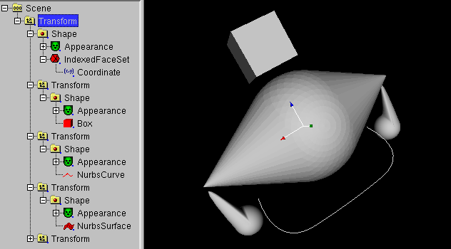
Die Benutzung von Actions -> Convex hull resultiert in
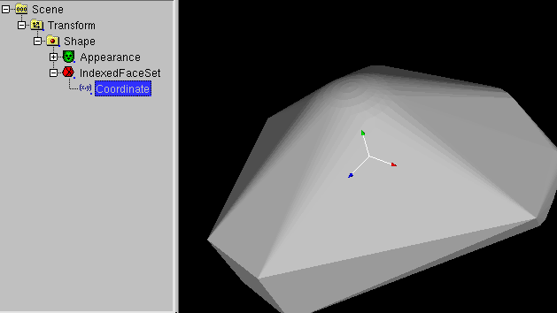
Vergessen Sie nicht, IndexedFaceSet.creaseAngle anzupassen:
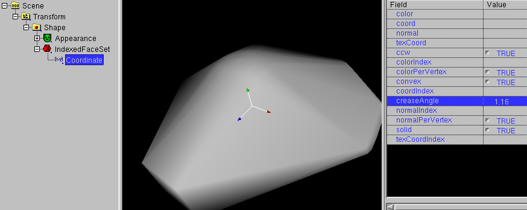
Arbeitet man mit Subdivide Modellierung (oder
einem 3D-Scanner), kann die Zahl der entstehenden Flächen explodieren.
Als kleine Abhilfe steht ein Flächen Reduzierer zur Verfügung.
Als Beispiel das Resultat einer konvexen Hülle Operation:
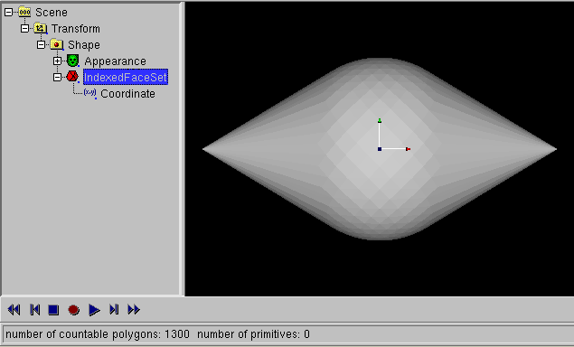
Wählt man IndexedFaceSet an, wird (IndexedFace)Set ->:
Flaechen Reduzierer verfügbar.
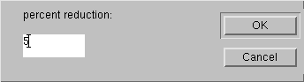
Klickt man es an, wird in einem Dialog nach dem Prozentsatz der verbliebenen
Flächen gefragt. Wird z.B. 5 Prozent angegeben, verbleiben 1/20 der
Flächen.
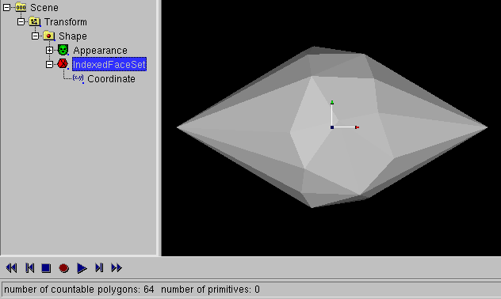
Es ist zu beachten, dass der Flächen Reduzierer genau wie das konvexe
Hülle Werkzeug keine symetrischen Ergebnisse liefern.
Als einziger Ausweg hilft die symetrische Modellierung.
Mit (IndexedFace)Set -> mache symetrisch kann man die eine
(plus) oder andere (plus abgewählt) Seite eines IndexedFaceSet spiegeln.
"Skin and bones" bedeutet dass Sie eine Oberfläche als Haut (skin)
und Gelenke/Knochen (bones) haben, um die Oberfläche zu manipulieren.
Skin and bones Techniken in X3D sind verbunden mit dem HAnimHumanoid
Befehl, weil die hauptsächliche Anwendung die menschliche Animation ist.
Aber menschliche Animation erfordert eine Menge Gelenke, deswegen wird
eine Blume mit zwei Gelenken gezeigt.
Zuerst starten wir mit einem IndexedFaceSet einer Blume
(erzeugt mit einem SuperRevolver, konvertiert zu einem modifizierten
Nurbs(Patch)Surface konvertiert zu IndexedFaceSet).
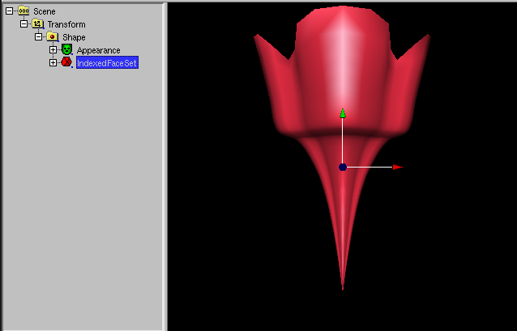
Als nächstes HAnimHumanoid Knoten mit
Erzeugen -> X3D misc components
-> H-Anim -> HAnimHumanoid und ziehen Sie den Shape Befehl in
HAnimHumanoid.skin.
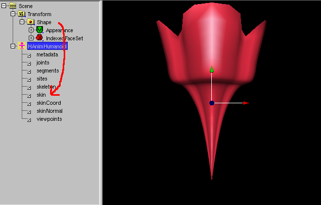
Bitte stören Sie sich nicht daran, dass die Blume aus dem
preview 3D-Fenster verschwindet.
wählen sie den Coordinate Befehl an und benutzen Sie
Auswahl -> Eckpunkte (oder besser:
Auswahl -> HAnimJoint ohne weight).
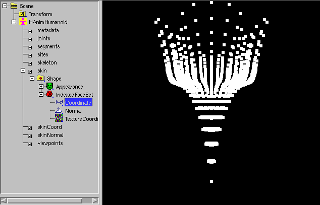
Wenn Aktion ->X symetrisches Modelling angeklickt ist,
klicken Sie auf das
 Icon.
Icon.
Benutzen Sie die rechte Maus-Taste um eine Box um die Hälfte der
Blume aufzuziehen.
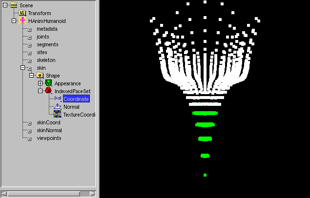
Benutze Erzeugen -> X3D misc components -> H-Anim -> HAnimJoint.
Ein Dialog öffnet sich:

Klicken Sie OK.
Ein DEF Dialog öffnet sich. Klicken Sie OK.
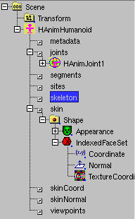
Wählen Sie das HAnimHumanoid.skeleton Feld an. Benutzen Sie
Bearbeiten -> USE.
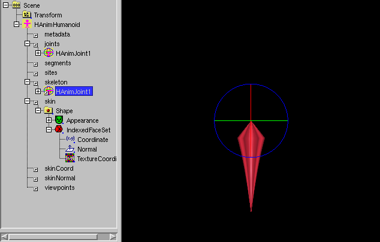
Wählen Sie "Scene".
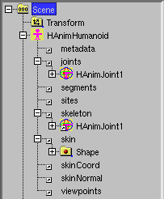
Wählen Sie den Coordinate Befehl an und benutzen Sie die rechte Maustaste
um eine Box um den Rest der Blume aufzuziehen.
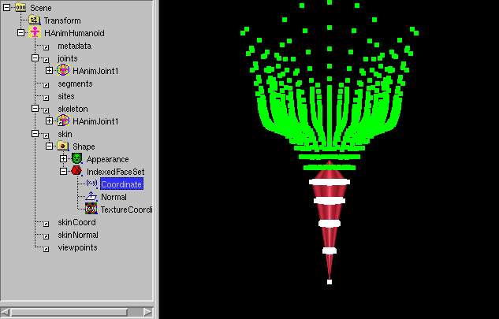
Ein Dialog öffnet sich:
Click to OK.
Ein DEF Dialog öffnet sich. Klicken Sie OK.
Wählen Sie das HAnim_Humanoid.skeleton.HAnimJoint1.children Feld an.
Benutzen Sie Bearbeiten -> USE.
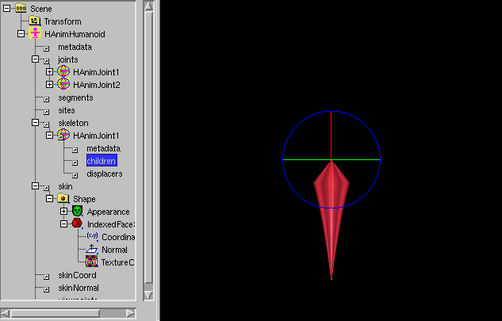
Die Blume und ihr Gelenk ist fertig. Benutzen Sie Modus ->
Drehpunkt verschieben um den Drehpunkt des Gelenks zu verschieben.
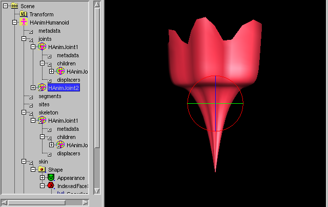
Benutzen Sie Modus -> Drehen, dann benutzen Sie den Drehgriff
um den oberen Teil der Blume zu drehen.
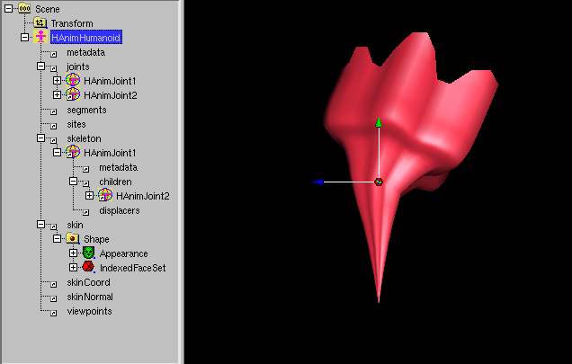
Um HAnimJoint.skinCoordWeight kleiner 1 zu setzen, wählen Sie den
HAnimJoint aus (wählen Sie "Scene" um diese Auswahl zu vergessen), dann
wählen Sie den Coordinate Knoten.
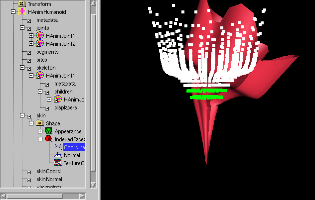
Benutzen Sie die rechte Maustaste um eine Box um die Eckpunkte aufzuziehen,
deren HAnimJoint.skinCoordWeight sie setzen wollen.
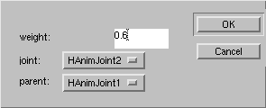
Setzen sie den weight Wert im Dialog, das "node" und "parent" Dialog Element
wurde gesetzt durch die vorherige HAnimJoint-Auswahl. Klicken Sie OK.
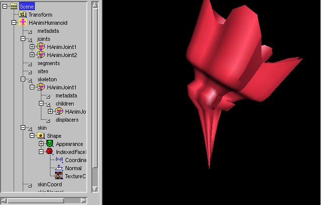
Die Blume ist fertig, aber HAnimHumanoid.skinCoord muss gesetzt werden.

Sie m%uuml;ssen HAnimHumanoid.skin.Shape.IndexedFaceSet.Coordinate anwählen
und Bearbeiten -> DEF benutzen.
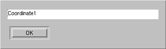
Klicken Sie OK.
Wählen Sie HAnimHumanoid.skinCoord an und benutzen Sie
Bearbeiten -> USE.
White_dune erlaubt die boolsche Modellierung von IndexedFaceSets.
Dabei werden eine Gruppe (Knoten Group) von 2 Meshes (graphische
Objekte außer Text (und andere Flächen)) voneinander
abgezogen, eine Schnittmenge gebildet oder zusammengebaut. Dabei entsteht
ein neues IndexedFaceSet. Erlaubt sind nur geschlossene Objekte,
die sich nicht selbst überschneiden dürfen.
Begonnen wird mit einer Box
Als nächstes muß "Scene" angewählt werden.
Dann wird eine Kugel hinzugefügt. Sie ist zwar nicht sichtbar,
aber die Griffe sind noch sichtbar.
Die Kugel wird leicht vergrößert indem man an den Griffen zieht.
Als nächstes wird das erste Transform angewählt.
Danach wird Aktion -> Rest des Szenengraph Zweigs ->
Verschieben in -> Group benutzt. Natürlich gibt
es auch einfachere Wege um eine Gruppe mit zwei Meshes herzustellen.
Als nächstes wird die Group angewählt.
Danach wird (IndexedFace)Set -> Boolsche Operationen -> Schneiden
angewendet.
Es entsteht ein IndexedFaceSet mit der Schnittmenge der beiden Objekte.
Danach wird "Scene" angewählt.
Als nächstes wird noch eine Kugel eingefügt...
... und vergrößert
Als nächstes wird das erste Transform angewählt.
Danach wird Aktion -> Rest des Szenengraph Zweigs ->
Verschieben in -> Group benutzt.
Als nächstes wird die Group angewählt.
Danach wird (IndexedFace)Set -> Boolsche Operationen -> Abziehen
angewendet. Dabei einsteht ein IndexedFaceSet.
White_dune erlaubt es Objekte zu vervielfältigen.
Im Unterschied zu ähnlichen Funktionen in einigen 3D-Modellers
(wie dem "Art of Illusion" Programm) werden dabei nicht N Kopien des
gleichen Objekts erzeugt. Es werden N VRML Transform Knoten (für
Verschiebung (translation), Drehung (rotation), Vergrössern/Verkleinern
(scale) und Mittelpunkt (scale) abhängig vom Arraydialog) mit
einem VRML USE Konstrukt erzeugt. Ein USE Konstrukt ist ein kompakter
Weg um Dinge in VRML zu wiederholen. Es ist eine Art "Zeiger ohne
Unterschied", ähnlich wie ein Hardlink zu einer UNIX Datei (wenn
Sie nur M$Windows kennen: eine cleverer Abart eines Shortcut zu einer
Datei). Ein ge-USE-ter Knoten ändert sich ebenfalls, wenn sich das
Orginal verändert.
Um das Array Werkzeug zu benutzen, muss das Objekt ausgewählt werden,
das vervielfälltigt werden soll.

Danach wird der Menüpunkt Aktion -> Vervielfaeltigen benutzt.
Im folgenden Array Dialog

kann die Zahl der Objekte (Numbers Objects) und die Parameter für die
Transform Knoten eingetragen werden.

Wenn das Orginal geändert wird, ändern sich alle ge-USE-ten
Knoten ebenfalls.

Reparatur-Kommandos im "Aktion" Menü
Die folgenden Kommandos sind nützlich, wenn man mit VRML/X3D Dateien
arbeitet, die aus anderen Werkzeugen stammen. Sie dienen zur Korrektur
von einigen kleineren Fehlern oder Problemen.
-
In einigen Fällen exportieren bereits benutzte Werkzeuge Dateien mit
ungültigen Kindknoten ("invalid children nodes").
Bei der Benutzung des Löschbefehls für diese Knoten sind zwei
Fälle zu unterscheiden:
-
Der Programmierer dieser Werkzeuge hat die Bedeutung von DEF/USE
mit einem Macroverhalten wie bei der Benutzung von "#define"
bei der Programmiersprache C verwechselt. Da in diesem Fall noch
ein weiterer USE Befehl für den entsprechenden Knoten existiert,
lässt sich der vorherige ungültige Kindknoten mit
dem zugehörigen "DEF" gefahrlos in white_dune löschen,
ohne dass dabei Information verloren geht.
-
Der Programmierer dieser Werkzeuge hat einen anderen Fehler
begangen. In diesem Fall bedeutet das Löschen des
ungültigen Kindknotens einen echten Datenverlust.
-
Ein IndexedFaceSet besteht aus Polygonen. Im Allgemeinen bedeutet das,
das es Flächen mit 3, 4, 5, 6, 7 usw. Ecken gibt. Leider ist die
Aufgabe, Polygone bei Echtzeit 3D darzustellen nicht so einfach.
Hauptsächlich kann es drei Probleme geben, wenn eine Fläche
mehr als 3 Ecken hat:
-
Das Polygon überschneidet sich selbst.
Dazu gibt es eine Regel im VRML97 Standard:
"Each face of the IndexedFaceSet shall have: ... vertices that define a
non-self-intersecting polygon." (Jede Fläche des IndexedFaceSet
sollte haben: ... Eckpunkte, die ein nicht-selbst-überschneidenes
Polygon definieren)
Polygone, die sich selbst überschneiden, werden normalerweise als
beschädigt angesehen. Oft wurden sie von einem echten
Programmfehler mit versehentlich vertauschten Ecken eines Polygons
erzeugt.
Auf jeden Fall werden diese Polygone nicht so angezeigt,
wie sie definiert sind.
Links ein sich überschneidenes Polygon, rechts das triangulierte
Polygon
-
Das Polygon ist nicht flach.
Dazu gibt es eine Regel im VRML97 Standard:
"Each face of the IndexedFaceSet shall have: ... vertices that define a
planar polygon." (Jede Fläche des IndexedFaceSet
sollte haben: ... Eckpunkte, die ein planares (flaches) Polygon
definieren)
Leider ist es nicht ungewöhnlich, dass diese Regel ignoriert wird,
obwohl es mindestens zwei Möglichkeiten gibt, nicht flache Polygone
darzustellen.
Zum Beispiel kann ein Polygon mit den Ecken 1, 2, 3, 4 gerendert werden
entweder als ein Dreieck mit den Ecken 1, 2, 3 und ein Dreieck mit den
Ecken 3, 4, 1 gezeichnet werden oder als ein Dreieck mit den Ecken
4, 1, 2 und einem Dreieck mit den Ecken 2, 3, 4. Falls das Polygon nicht
flach ist, sehen diese Dreiecke verschieden aus.
-
Das Polygon ist nicht konvex.
Anders als bei den beiden anderen Fällen ist es möglich,
ein IndexedFaceSet mit nicht-konvexen Polygonen zu haben, wenn sein
"convex" Feld den Wert "FALSE" (falsch) hat.
Im allgemeinen ist es einfacher/schneller, ein konvexes Polygon
darzustellen. Wenn beim Darstellen eines nicht-konvexen Polygons
der Algoritmus zur Darstellung eines konvexen Polygons benutzt wird,
kann das Ergebnis sehr hässlich aussehen.
Links ein nicht-konvexes Polygon, dargestellt mit "convex TRUE",
rechts das triangulierte Polygon.
Alle diese Probleme können vermieden werden, wenn die Polygone
mit mehr als 3 Ecken in Dreiecke umgewandelt werden. Das nennt man
"Triangulation".
Im allgemeinen erfordert die Triangulation die Erzeugung von neuen
Eckpunkten, deswegen ist es keine gute Idee, Triangulation bei
einem IndexedFaceSet zu benutzen, das für eine Morphing Animation
benutzt wird.
-
Einige Werkzeuge, die VRML/X3D Dateien schreiben, erzeugen bei der Benutzung
von Dateien (zum Beispiel bei der Benutzung von Bildern/Bitmaps beim
ImageTexture Knoten) Pfade im "url" Feld, die nur auf dem erzeugenden
Rechner gültig sind (zum Beispiel "C:\temp\beispiel.png").
VRML/X3D Dateien werden aber sehr häufig auf einen Webserver gelegt.
Selbst wenn die Dateien mit auf den Webserver übertragen werden, ist
damit noch nicht sichergestellt, dass die Pfade in der VRML/X3D Datei
stimmen.
Der Befehl "Set path of all URLs to" erlaubt es, alle Pfade umzustellen.
Sehr sinnvoll ist dabei der Defaultpfad ".", der bedeutet, dass die
Bild-, Sound-, Film- usw. Dateien im gleichen Verzeichnis wie die
VRML/X3D Datei untergebracht werden kann.
Weitere Kommandos im "Aktion" Menü
-
Die Benutzung der "Edit Object"/"Edit URL" Aktion wurde schon im
Kapitel über script editing beschrieben.
Neben der Benutzung eines Texteditors um das "url" Felds eines Scripts
selbst zu verändern ("Edit URL"), wird auch die Benutzung eines
Spezialwerkzeugs beschrieben ("Edit object").
Die gleichen Prinzipien können auch auf andere Knoten mit "url" Feldern
angewendet werden: dem ImageTexture, dem AudioClip und dem MovieTexture
Knoten.
Die Benutzung von Aktion -> Objekt editieren startet bei
angewähltem Knoten des Typs
-
ImageTexture
ein Programm zum Verändern von Bilddateien/Bitmapdateien (.jpg/.png)
(zum Beispiel gimp oder xpaint)
-
AudioClip
ein Programm zum Verändern von Sounddateien (.wav)
(zum Beispiel audacity oder wavesurfer)
-
MovieTexture
ein Programm zum Verändern von Filmdateien (.mpeg)
(zum Beispiel avidemux)
Die Linux/UNIX Version von white_dune sucht im Konfigurationsschritt
der Kompilierung aktiv nach bereits bekannten Programmen, die für
Aktion -> Objekt editieren benutzt werden können.
Ist kein entsprechendes Programm verfügbar, so fragt ein Dialog
beim ersten Aufruf dieser Menupunkte nach einem entsprechenden Programm.
&Uuuml;ber den Dialog bei Optionen -> Text/Objekt Editor
Einstellungen lassen sich die Programme auch jederzeit gegen
andere austauschen.
Ein wichtiger Hinweis für MacOSX Benutzer: das Programm, das benutzt
wird, um Text oder Obekte zu bearbeiten darf nicht sofort nach dem
Start zur Kommandozeile zurückkehren. Das ist der Normalfall
bei den üblichen MacOSX Programmen. Man kann entweder versuchen,
das Binärprogramm eine something.app MacOSX Programms im
Verzeichnis direkt aufzurufen oder man kann auf MacOSX portierte
UNIX/X11 Programm wie gimp benutzen.
-
Manchmal ist es sinnvoll, alle veraünderten Werte eines Knotens
wieder auf die Anfangswerte zurükzusetzen. Allerdings sind beim
baumförmigen VRML/X3D Szenengraph oft Knoten ineinander verschachtelt,
so dass eine neues Setzen der Anfangswerte auch ein Löschen
ganzer Teilbäme bedeuten würde.
Deswegen werden beim Setzen von default Werten Knotenfelder vom Typ
SFNode bzw. MFNode unverändert gelassen.
-
Röntgenblick (new in Version 0.27beta)
Die experimentelle Röntgenblick Funktion lässt einen
durch alle undurchsichtigen Oberfläche einer Szene schauen.
Das ist meistens sehr verwirrend, ist aber manchmal sehr nützlich.
(new in Version 0.99pl444)
Um ein PROTO zu erstellen, muss zuerst ein Szenengraphzweig erstellt werden,
deren Knoten den Grossteil des PROTOs ausmachen.
In diesem Beispiel sind ein Shape/Box, ein Shape/Sphere und ein Viewpoint
Knoten in diesem Szenengraphzweig.

Um ein PROTO mit diesen Knoten zu erstellen, muss Actions->Rest of
scenegraph branch->Move to->new PROTO angeklickt werden.

Es folgt ein Dialog, der nach dem Namen des PROTOs fragt, hier wählt
man "DOME" (Kuppelgebäude)

Als nächstes folgt ein Dialog, der die Argumente des PROTOs bestimmt.
An diesen Dialog kommt man später wieder mit Selektieren des PROTOs und
Edit -> Object edit heran.
Als field Argument wählt man SFColor color und drückt "Add".

Danach drückt man "ok" um den Dialog abzuschliessen.

Als nächstes öffnet sich das RouteView/IS-Fenster, dabei ist das
PROTO "DOME" selektiert.

Es is jetzt möglich, die Knoten des PROTOs in den Szenengraph zu
verschieben oder neue Knoten hinzuzufügen.
In diesem Fall wird der Viewpoint Knoten aus dem PROTO in die normale
Szene verschoben.
Als nächstes benutzt man Create -> PROTO usage -> DOME
um den DOME im Szenengraph darzustellen.

Als nächstes selektiert man den einen Material-Knoten im PROTO und
benutzt Routes/IS -> Show node on top .

Dananch verschiebt man Material-Knoten und PROTO im Route/IS view um
color und diffuseColor zu verbinden.

Als nächstes selektiert man den anderen Material-Knoten im PROTO und
benutzt Routes/IS -> Show node on top .

Dananch verschiebt man den anderen Material-Knoten und PROTO im Route/IS view
um color und diffuseColor zu verbinden.

Danach lässt sich "color" im DOME-Knoten verändern und
ein weiteres Transform und DOME Paar einfügen.

(new in Version 0.29beta)
In VRML/X3D ist es erstaunlich schwierig eine Folge von Animationen zu
erzeugen, die man üblicherweise "Film" nennt.
Passend zur Echtzeit 3D Natur von VRML/X3D können Animationen interaktiv
und unabhändig voneinander gestartet werden, deswegen ist es schwierig,
eine allumfallende timeline (wie beim cutten eines Films) zu erzeugen.
Ein Ansatz, um das Problem in white_dune zu erleichtern ist die Benutzung
des scripted PROTO Knoten VrmlCut. Dieser Knoten hat ein Field "scenes",
in dem einzelne VRML/X3D Animationsdaten in einem anderen scripted PROTO
Knoten namens VrmlScene abgelegt werden kann. Der Inhalt so eines VrmlScene
Knoten kann man als Inhalt einer einzelnen Scene in einem Film ansehen.
Der VrmlCut Knoten schaltet von einer VrmlScene zu der nächsten, versucht
zur ersten Kamera(Viewpoint) zu springen und alle Animationen in der
aktuellen VrmlScne zu starten.
Genau wie die SuperShape, SuperEllipsoid, usw. Knoten ist der VrmlCut Knoten
ein eigentlicher VRML Knoten. Es ist ein PROTO, ein Verbund von VRML Knoten,
er besteht aus einem Switch Knoten, einem Script Knoten und einem TimeSensor.
Genau wie ein Script Konten hat er einen Veränderlichen Satz von
fields/events. Weil mehrere VrmlCut Knoten mehrere verschiedene Sätze von
fields/events hätten, can man nur eine Proto Definition von VrmlCut und
deshalb nur ein VrmlCut Knoten pro VRML-file haben.
Der VrmlCut Knoten schaltet die Abfolge von VrmlScene Knoten (ein Group
artiger Knoten mit einem Script Knoten für routing) angetrieben von
TimeSenor und Script.
Alle Informationen zwischen VrmlCut, VrmlScene, TimeSensoren (für Animationen)
und Viewpoints (Kameras) werden über ROUTE Verbindungen übertragen.
Das macht das Konzept flexibel (zum Beispiel können die ROUTE sourcen
benutzt werden um andere Knoten wie Sound oder Fog zu versorgen), aber
die Erzeugung von vielen Routes bedeutet viel Arbeit.
Um die Arbeit zu reduzieren, kann die folgende Methode benutzt werden:
-
Erzeugen sie einzelne Scenen, jede in einer eigenen VRML Datei.
-
Oeffnen sie eine VMRL Datei mit einen gemeinsamen Hintergrund (oder eine
leere Datei).
-
Benutzen Sie Erzeugen -> Scripted PROTOs -> VrmlCut
um eine VrmlCut Knoten zu erzeugen.
-
Benutzen sie direkt danach Erzeugen -> Scripted PROTOs -> VrmlScene
um einen VrmlScene Knoten zu erzeugen.
-
Benutzen sie direkt danach Datei -> Einfuegen um eine VRML Datei
in die Scene zu bringen. Alle TimeSensoren und der erste Viewpoint
werden mit ROUTEs von dem VrmlScene Knoten verbunden.
Das loop Field in den TimeSensoren wird abgeschaltet. Die grösste
cycleTime der TimeSensoren wird in den passenden Index des
scenelengths Field des VrmlCut Knotens abgelegt.
-
Benutzen sie direkt danach Erzeugen -> Scripted PROTOs -> VrmlScene
um den nächsten VrmlScene Knoten zu erzeugen.
-
Benutzen sie direkt danach Datei -> Einfuegen um die nächste
VRML Datei einzufügen.
-
usw.
Am Schluss kann man mit dem "play" icon oder über "Datei -> Vorschau
the Kette von Animationen starten.
Mit den sceneNumber, numberPreviousScenes und numberNextScenes Fields
des VrmlCut Knotens kann ein reduzierter Bereich der Animationen angeschaut
werden. Das ist sinnvoll, um die Längen der Scenen im sceneLengths field
des VrmlCut Knoten zu optimieren.
(new in Version 0.27beta)
White_dune hat einen Befehl (Menüpunkt Datei -> Upload)
um eine VRML Datei auf einen Internet Server heraufzuladen.
Beim heraufladen einer Datei ins Internet wird man üblicherweise
nach einem Passwort gefragt. White_dune kann das Passwort so speichern,
dass es von den Auslagerungsdaten (swapspace) durch mlock/vlock Aufrufe
geschützt ist.
Auslagerungsdaten ist der Inhalt von Computerspeicher der auf Platte
ausgelagert wird um Platz für andere laufende Programme zu machen.
Ein Eindringling kann die Auslagerungsdaten nach Passworten durchsuchen.
Die Übertragung eines Passworts von einer Anwendung (white_dune)
zu einer anderen Anwendung (dem Herauflade-Kommando) auf einem
sicheren Weg ist keine leichte Aufgabe, wenn man an Probleme wie
die Auslagerungsdaten denkt.
Im upload settings dialog (Options -> Upload settings...)

kann das upload Kommando zwei Parameter haben. Jeder parameter der
upload Kommandozeil wird mit Hilfe der Buchstaben "%s" gesetzt.
-
Im Fall von nur einem "%s" wird dieser Parameter ersetzt mit dem
Pfad der VRML Datei, die aus den aktuellen Daten in white_dune
erzeugt wurde.
Wenn kein Passwort benutzt wird, kann des Herauflade-Kommando entweder
jedes Mal nach dem Passwort fragen oder es wird ein fortgeschrittener
Authentifizierungsalgorithmus wie z.B. ssh passphrase benutzt.
-
Im Fall von nur einem "%s" und wenn es ein Passwort gibt, wird diese
Passwort über standardin an das Herauflade-Kommando geschickt.
Normalerweise ist der Inhalt von standartin/standardout nicht vom
den Auslagerungsdaten geschützt, so dass es ein mögliches
Sicherheitsrisiko gibt.
-
Im Fall von zwei "%s" wird das Password as Kommandozeilen Option benutzt.
Auf den meisten Operationsystemen, bedeutet das ein hohes Sicherheitsrisiko,
denn die Kommandozeilen kann von jedem anderen Benutzer auf dem gleichen
System gelesen werden.
Die letzte Zeile im upload settings Dialog enthält die Möglichkeit,
eine html-webpage nach dem Heraufladen aufzurufen. Um das zu nutzen,
müssen die entsprechenden HTML tags eingetippt werden, die dann
in ein HTML file eingetragen werden.
Zum Beispiel ist im folgenden Dialog eingetragen, dass die Daten aus
white_dune in eine VRML Datei mit einem vorbestimmten Namen kopiert
wird und dann diese VRML Datei zusammen mit der Zeichenkette "hello"
im Webbrowser beim nächsten Datei -> Upload Kommando
dargestellt wird.

Die Zeile mit den HTML tags kann "%s" einhalten, was dann durch
das Passwort ersetzt wird. Dadurch wird ein HTML file mit einem
Passwort erzeugt. Das ist ein sehr hohes Sicherheitsrisiko, benutzen
diese Möglichkeit nicht, wenn Sie nicht genau wissen, was Sie tun !
***
Der Knotenvektoren ist der Vektor, über dem die NURBS-Kurve definiert ist.
Ohne darauf näher einzugehen, soll nur kurz und beispielhaft sein
Einfluß
gezeigt werden. Betrachtet man den im Bild gezeigten Knotenvektor, so
fällt auf, dass sich die ersten sowie die letzten Werte des Knotenvektors
wiederholen. Das hat zu Folge, dass die Kurve wirklich bis zum ersten (letzten)
Kontrollpunkt geht, und die erste (letzte) Seite des Kontrollpolygons (Polygon,
dass durch die Kontrollpunkte gebildet wird) als Tangente besitzt, wodurch man
bequem und "kontrolliert" modellieren kann (Man kennt die Endpunkte des
Splines).
Vervielfacht man Werte des Knotenvektors in seinem Inneren, so erzeugt man
einen
Stetigkeitabfall in der Kurve. Tritt ein Knoten so oft auf, wievielten Grades
die
Kurve ist, so kann man, wie im Bild zu sehen, eine Ecke in der Kurve erzeugen.


 im Scene Tree Fenster
je nach der Auswahl der Transformicons
im Scene Tree Fenster
je nach der Auswahl der Transformicons